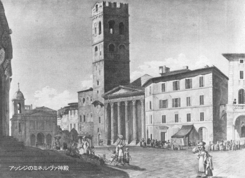

ヴェローナからヴェネツィアまで
ヴェローナにて、九月十六日
円形劇場は古代の重要記念物のうち、ぼくの見る最初のものであり、それはじつによく保存されている！中に入ったとき、それに上部の縁を歩きまわったときはなおさらに、何か偉大なものを見ているような、それでいてじつは何も見ていないような、妙な気がした。事実また、それはからっぽのところを見るべきものではなく、近年ヨーゼフ二世やピウス六世のために催し事が取り行われたときのように、人間がいっぱい詰まっているところを見るべきものである。さすがに群衆を目の前にするのに慣れていた皇帝も、これにはびっくりされたそうである。しかしこの劇場が全面的に効果を発揮できたのは、最古の時代だけであった。当時は民衆が現在より以上に民衆らしくあったからだ。元来このような円形劇場は、民衆をして自分たちもたいしたものだという気を起こさせ、自分たちの姿を見て自らを楽しませるように作られている。
平らな地面の上で何か見物に値することが起こってみなが集まってくると、いちばん後方にいる連中はありとあらゆる方法で最前列の連中より高くなろうとする。ベンチに乗ったり、樽をころがしてきたり、馬車で乗りつけたり、板をあちこちに架けたり、近くの丘を占領したりして、たちまちのうちに噴火口のような形になる。
見世物がたびたび同じ場所で行われると、料金を払える人びとのためには簡単な
桟敷が設けられ、あとの群衆は好き勝手に手段を考え出す。このような一般的要求を満足させるのが、ここでは建築家の使命なのだ。建築家はこのような噴火口式のものを人工的に造りあげる。それもできるかぎり簡素に、民衆自身がその装飾となるようなぐあいにする。民衆がそのようにして集まった自らを眺めるとき、彼らは自らにたいして驚嘆せずにはいられなかった。それは彼らが、いつもは自分たちが右往左住し、秩序もそして特別な規律もなしに雑然としているのを見慣れているのに、この
頭数も多ければ心も各自ばらばらであちこちと行き迷う動物が、合して〈一つ〉の高貴な身体となり、〈一つ〉の統一体にまで定められ、一つの集団にまで結ばれ固められ、〈一つ〉の精神に生きる〈一つ〉の形姿となった自らを認めるからである。楕円形の単純な形は誰の目にもきわめて快く感じられ、一人一人の頭は、全体がいかに途方もなく大きいかを計る尺度として役立つ。いま劇場がからっぽであるのを見ると、尺度がないので、劇場が大きいのか小さいのか見当がつかない。
こういう作品を保存してくれたについては、ヴェローナ人は賞賛されねばならぬ。それは赤味をおびた大理石でできているが、石が風化を受け、腐蝕した階段は順番に絶えず修復され、そのためほとんど全部がまるで新しく見える。ヒエロニムス・マウリゲヌスの名前と、この記念物に注がれた彼の信じられぬほどの熱意をしのばせる碑文がある。外壁は一部しか立っていないが、かつてそれが完成したことがあったかどうかは疑わしい。下方のアーチはイル・ブラーと呼ばれる広場に接しているが、職人たちに貸しつけてあって、こういう洞穴にふたたび人が住んでいるのを見るのはなかなかに面白い。
ヴェローナにて、九月十六日
ポルタ・ストッパあるいはポルタ・デル・パリオと呼ばれる門は、このうえもなく美しいが、いつも閉ざされている。この門は遠方からも見えているが、門としての構想は遠目にはよくない。近くで見て初めてこの建物の値打ちがわかる。
なぜ閉ざされているかについては種々様々な原因があげられている。しかしぼくの推測では、建築家の意図は明らかにこの門によって新たに馬車道路の工事を起こすことにあったのだと思う。というのは現在の街路にはこの門はまったく場ちがいだからである。左側はバラックばかりだし、門の中央から垂直の線は尼僧院に向っている。だからこれはいきおい取りこわされねばならなかったであろう。そのことは当時の人には十分わかっていたことだし、それにまた身分の高い金持の人びとはこの辺ぴな区域に定住する気はないようであった。そのうち建築家が亡くなったのであろう。それで門は閉じられ、したがってその計画にもいっきょに終止符がうたれたわけだ。
ヴェローナにて、九月十六日
劇場〔テアトロ・フィラルモニコのこと〕の大玄関は六本のイオニア式円柱からなり、なかなか立派に見える。それだけに入口の上方にあって、二本のコリント式円柱に支えられる彩色
壁龕の前にある、大きなかつらをつけたマッフェーイ侯〔ヴェローナ出身の詩人・考古学者〕の等身大の胸像はいっそう貧弱に見える。誉れ高い場所に鎮座しているが、壮大雄渾な円柱にどうにか対抗してゆくには、よほど大きな胸像でなければならなかっただろう。現在では貧弱な姿で小さな台座の上にのっているので、全体とは調和していない。
前庭を囲む柱廊もまた貧弱であり、みぞ彫りをしたドリア式小円柱は、なめらかな、巨人のようなイオニア式のものと並ぶと見すぼらしく見える。しかしここの柱廊玄関の下に設けられている立派な陳列所にめんじて、この点は大目に見ることにしよう。ここには、おおむねヴェローナ市の内外で発掘された古代美術品が収集され陳列してある。円形劇場で発見されたものさえ二、三あるそうだ。エトルリア、ギリシア、ローマのものや、それ以降の時代、さらに近代のものもある。浅浮き彫りは壁にはめこんであり、マッフェーイがその著『ヴェローナ案内』のなかにそれを記述したときに付した番号がついている。祭壇、円柱の断片、そういった類いの遺物、白色大理石のすばらしい三脚椅子、その上には神々の
持物をもてあそんでいる精霊たちの群。ラファエロはこれをファルネシーナ別荘〔ローマのヴィラ・ファルネシーナのこと〕の三角小間において模倣し、さらに神々しいものとしている。
古代人の墓から吹いてくる風は、ばらの咲く丘を越えてくるように芳香をともなっている。墓標は心のこもった感動的なもので、つねに生命をよみがえらせる。妻と並んで、窓からでものぞくように壁龕からこっちを見ている夫もいる。息子をなかにはさんで父と母が、いうにいわれぬ自然な姿で互いに顔を見かわしている。そうかと思えば恋人どうしが互いに手をとりあっている。父親がソファーにくつろぎ、家族の話を聞いている姿もある。こういう墓石を目の前にして、ぼくはことのほか感動をおぼえた。それらは後世の作ではあるが、素朴で自然で、みんなの心に訴えかけてくる。ここにはひざまずいて、悦ばしい再生を待ちもうけている甲胄姿の男はいない。作者は、技法に巧拙はあれ、ただ人間のありふれた現在を描き、それによって人間の存在を持続させ永遠化しているのだ。彼らは合掌したり天を仰いだりしてはいない。その昔あったままの、現在あるがままのこの世の姿である。あいつどい、むつみあい、いとしみあっているそのさまは、ある種の技巧の稚拙さをさえ見せながらも、墓石のなかにこのうえなく愛らしく表現されている。ひどく装飾の多い大理石の支柱が、ぼくには新しい意味をもつものとなった。
この陳列所はたいへん結構なものだが、これを創設したときの高貴な保存の精神はもはやここには生きつづけていないことがわかる。貴重な三脚椅子も、むきだしのまま西からの風雨にさらされているから、まもなく駄目になってしまうだろう。木製のケースでもあればこの宝物は容易に保存されるだろうに。
起工しかけたままの市長官邸は、もし完成したとすれば建築上の傑作となったであろう。そのほかにも貴族はまだいろいろな工事をしている。しかし残念なことに、誰もが自分の以前の邸宅のあった場所、したがって狭苦しい小路に建築している場合が多い。たとえば現在でも、遠く離れた場末の路地に、神学校の壮麗な正面工事が行われている。
ふと知りあった道づれとともに、ある見事な建物の雄大にして荘重な門の前を通りかかると、その道づれは好意から、ちょっと中庭に入ってみましょう、とぼくに言った。それは高等法院で、建物が高いので中庭は途方もなく大きな井戸としか見えなかった。「ここにすべての犯罪人と容疑者が収容されるのです」と彼は言った。見まわすと、各階すべてに鉄の手すりのついた開けひろげの廊下が、数多くの扉に沿って通じていた。訊問を受けに獄舎から連れ出される囚人は戸外の空気にふれるわけだが、しかしまた衆人の目にさらされることになった。それに訊問室はいくつかあるらしく、あちこちの廊下で鎖のがちゃつく音が、各階すべてになりわたった。それは見るもおぞましい光景であったし、ぼくが鳥群を一蹴したあのユーモアも、さすがにここでは尻込みせざるをえなかった。
日没ごろ、噴火口形の円形劇場のふちを、市と近郊への絶景を楽しみながら歩いた。ぼくは独りぼっちだった。そして下のブラー広場の幅広い石だたみの上をじつに多くの人間が、さまざまな階級の男や中流の女たちが、散歩していた。女たちは黒の外衣を着ているので、こうして高いところから見おろすと、ミイラのように見える。
ゼンダーレと、この階級の女にとってすべての衣裳の代用をするヴェステとは、ともかく、清潔さという点ではつねに配慮されているとはかぎらないが、やれ教会それ散歩だのとつねに人なかに出たがる連中にはちょうどあつらえむきの衣裳である。ヴェステとは他の上衣の上にはおる黒
琥珀織の外衣である。婦人がヴェステの下に清潔な白い上衣を着るときは、黒の外衣の一方のわきを高く端よりあげておく。この外衣は帯でむすばれているので、腰をきつく締めつけてくびらせ、さまざまな色のコルセットのすその部分にかぶさるようになる。ゼンダーレは長い飾りひげのついた大きな頭巾で、頭巾そのものは針金で頭上高く支えられているが、飾りひげは飾り緒のように体に巻きつけてあって、その端が背後に垂れている。
ヴェローナにて、九月十六日
今日は
円形劇場からの帰りに、そこから数千歩のところで近代的な公開競技をやっているのに出会った。四人の気品あるヴェローナ人が、四人のヴィチェンツァ人を相手に球技をやっていた。ふつうならヴェローナ人だけで一年じゅう、日暮れ前の二時間ほどこれを行うのだが、このときはよそ者が相手だったので、むやみに人がたかってきた。観衆はつねに四、五千人を下ることはなかっただろう。婦人はどんな階級のものも見当らなかった。
以前このような場合における群衆の欲求について話したとき、自然にそして偶然に円形劇場の形となることをすでに述べておいたが、ここでも人びとが上下に重なりあって並ぶのを見た。盛んな拍手の音がすでに遠くから聞こえ、すばらしい当りのたびごとに拍手が起こった。ところでその球技は次のように行われる。互いに適当な距離をおいて、ゆるやかに傾斜した平らな板が二枚おかれている。球を打ち出す人は右手に木製の幅の広い、とげのある環をもち、板の最上部の高いところに立っている。同じ組の別の人が彼に球を投げてやると、彼はその球めがけて走りおりてくるのだが、それによって球を当てるときの打撃の力を増すのである。相手方は球を打ち返そうとする。ついに競技場に球が落ちてしまうまで球の応酬が行われる。この球技の際に、大理石像にかたどっておいてもいいような、このうえなく美しいポーズがとられる。体格の立派な、たくましい青年ばかりで、短いきっちりした白い服を着ているので、敵味方は、ただ色のついた
徽章だけで区別される。特に美しいのは、打者が斜面をかけおりて球に当てようと身がまえるときのポーズである。それはボルゲーゼの剣士〔ギリシアの彫刻家アガシアスの作った剣士の像〕のポーズに近いものがある。
こういう競技を、観衆にとってはきわめて不便な、古い市壁のところで行うのが奇妙に思われた。円形劇場というあれほど立派な場所があるのに、なぜあそこでやらないのだろうか！
ヴェローナにて、九月十七日
ぼくが見た絵のことにごく簡単にふれ、二、三の考察をつけ加えておきたい。ぼくがこの不思議な旅をするのは、自らを欺くためではなく、さまざまな対象にふれて自らを知るためである。このばあい正直に言って、ぼくには画家の技法とか腕前はほとんど理解できない。ぼくの注意、ぼくの考察はしたがって、ただ実際的な部分、つまり画題とその取り扱い方のだいたいに向けられるよりほかないだろう。
サン・ジョルジョはすぐれた絵画のある画廊である。全部が祭壇画で、その価値に差はあれ、いずれも注目に値する。しかしこの不幸な芸術家たち、彼らはいったい何を、誰のために描かねばならなかったのであろう！ 横三〇フィート、縦二〇フィートもあろうかという〈恵みの雨〉！ それと対をなして〈五つのパンの奇蹟〉！ こんな題で何が描けたのか？ わずかな穀物に殺到する飢えた人たち、パンを恵んでもらっている無数の人びと。画家たちはこのようなみじめな画題で立派なものを作ろうと苦心
惨憺したのだ。ところがこの無理強いが刺戟となって天才は傑作を生み出した。一万一千人の童女を従えたウルズラを描かねばならなかった画家は、じつに上手にその題材から身をかわしたものだ。聖女は国土を手中におさめ勝ちほこってでもいるかのように、前面に立っている。彼女の姿はたいへん高貴で、アマゾンのように純潔であり、刺戟的なところはみじんもない。一方、船からあがり行列をつくってやってくる童女の群は、すべて遠方に小さく見える。大聖堂にあるティツィアーノ〔ヴェネツィア派の巨匠〕の〈マリアの昇天〉はひどく黒ずんで見えるが、昇天するマリアが天を仰がず下界の友人たちを見おろしているその着想は、称賛に値するものだ。
ゲラルディニ画廊ではオルベットのひじょうな傑作を見いだし、この功績ある芸術家と突然、知り合いになれた。遠く離れていると一流の芸術家のことしか聞き知る機会がなく、しばしばその名前だけで満足する。ところがこの星空が全体の星座のなかの一つとして現われるとなると、世界は広大になり、芸術はゆたかになる。ここに、その着想を賞賛せずにはいられぬ一枚の絵がある。半身像だけが二つ描かれている。サムソンがちょうどデリラの膝に眠りこんだところで、デリラはサムソンの体ごしに、机の上のランプの横にある
鋏をひそかに手に取ろうとしている。たいへん立派なできばえである。カノッサ宮殿ではダナエを描いた絵がぼくの注意をひいた。
ベヴィラックア宮殿は最も貴重な作を蔵している。通称〈
楽園〉といわれるティントレット〔ティツィアーノの弟子〕の作品、ただし本当は、すべての族長、予言者、使徒、聖者、天使などの面前における、天国の女王としてのマリアの戴冠式の絵で、恵まれた天才がその豊かな全才能を展開する好機ともいえる題材である。筆の軽妙さ、精神、表現の多様さ、このすべてを賛嘆し味わうためには、その作品そのものを所有して、生涯それを目の前におかなくてはならないだろう。画家の手は限りなく行き届いていて、栄光のなかに消えてゆく天使の頭さえもが、それぞれの性格を表わしている。最も大きな姿は高さ一フィートもあろうし、マリアとマリアに冠をのせるキリストは約四インチである。しかしこの絵のなかで最も美しい女性はエヴァで、昔もいまも変らず少しなまめかしい。
パオロ・ヴェロネーゼ〔ヴェネツィア派の画家〕の肖象面を二、三枚見て、この画家にたいする尊敬の念はいっそう深まった。古典収集室は見事なものだ。倒れて横になっているニオベの息子はすばらしい。胸像は、鼻を修理してあるにもかかわらず、たいていはきわめて興味あるもので、市民の冠を戴いたアウグストゥス、カリグラの像その他がある。
偉大なもの美しいものを心から喜びをもって尊敬するのは、ぼくの生まれつきの性格である。そしてこの素質を、このような見事な対象にふれて日々刻々に育成する気持は、何にもましてしあわせなものである。
昼を享楽し、しかもとりわけ夕方を楽しむ国では、夜になることがきわめて意味深い。そのとき仕事は中止され、また散歩に行っている者も帰ってくる。父親は帰宅して娘の顔を見たいと思う。昼間は終わったわけだ。しかしぼくら北方の
常闇の国の住人は、昼がどんなものかほとんど知らない。永遠の暗い霧に包まれているぼくらにとっては、昼も夜も同じことだ、つまりどれだけの時間ぼくらは自由な空のもとを本当に散策し楽しむことができるのだろうか？ ここでは夜になると、朝から夕方までの昼間というものがはっきりと過ぎ去ったことになる。二十四時間が経過し、新しい時間の数え方がはじまり、鐘は鳴り、ロザリオを繰りながら祈りが唱えられ、下女は点火したランプを持って部屋へ入ってきて、「
今晩 は！〔「すばらしい夜を！」の意〕」と言う。この時刻は四季とともに変化はするが、当地に生活して活動している人間はまごつくことはない。彼らの生活のあらゆる享受は時刻ではなく、昼夜の別に関係しているからだ。もしもこの国民にドイツの時計を強制しようものなら、彼らは困惑するだろう。というのは彼らの時計は彼らの自然ときわめて密接なつながりをもっているからだ。夜になる一時間半か一時間前に貴族は馬車で外出をはじめる。ブラー広場に向い、広くて長い通りをポルタ・ヌオヴァヘ向い、その門をぬけて市の外側に沿っていくが、夜の鐘が鳴ると皆が引き返す。あるものは教会に乗りつけて「アヴェ・マリア・デッラ・セラ」のお祈りをするし、あるものはブラー広場に馬車をとめ、殿方たちは車に歩みよって貴婦人らと語らう。それはしばしつづく。ぼくはそれがいつまでつづくか見とどけたことは一度もない。歩行者は夜がふけるまで留まる。今日は折よくかなりの雨が降ったので埃も消え、じつににぎやかな生き生きとした眺めであった。
今後、ある重要な点でこの土地の慣習に順応してゆくために、ぼくはこの地の時間の計算をもっと容易にマスターするための手段を考え出した。つぎの図を見ればそのことが理解できる。
内側の環はドイツでの夜中から夜中までの二十四時間を意味し、ぼくらが数え、またドイツの時計が示すように十二時間ずつ二度に分れる。二番目の環はいまの季節に当地で鳴る鐘の音を示す。つまり同様に十二時までが二度で二十四時間、ただしドイツで八時を打つときに一時を打つというふうになっていて、さらに進んで十二時に至る。ドイツの時計で朝八時のとき再び一時を打つといった具合に進む。最後に一番外側の環は、毎日の生活で二十四時まで数えられることを示す。たとえば夜、鐘の音を七つ聞けば、真夜中は五時であることがわかっているので、七からこの数を引き、こうして夜半すぎの二時が得られる。昼に七つ打つのを聞けば、正午が五時であることがわかっているので、同様な処置をとって午後の二時が得られる。しかし当地の言い方に従おうとすれば、正午が十七時であることを知らねばならず、これにさらにこの二を加えて十九時と言う。このことを初めて聞いて考えてみると、きわめて複雑であり、実施は困難なように思われるが、しかしすぐに慣れてこの仕事を面白く感ずるようにさえなる。それは子供たちが、容易に解ける難問には喜びを感ずるのと同じように、ここの民衆も絶えずあれこれと計算するのを喜ぶのだ。彼らはもともと、いつも指をさしだし、あらゆることを暗算し、計算にたずさわることが好きなのである。そのうえこの国の人は正午も真夜中もまったく念頭にないし、この国へ来た外国人がするように二つの指針を互いに比較する必要もないのだから、この間題はずっと楽なことである。彼らは晩方からはただ時刻の打つのを数えるだけだし、昼間はその数を、彼らのよく知っている移り変る正午の時刻数に加えるのである。それ以上のことはつぎの図形につけ加えた注解によって説明される。
ヴェローナにて、九月十七日
民衆の動きは、ここではひじょうに活発でめまぐるしい。特に小売商店や職人の店が軒を並べているいくつかの通りでは、じつに楽しい光景を呈している。店や仕事場の前にはおよそ戸というものがない、いや間口はすべて開け放たれて奥まで見通され、中の出来事はまる見えである。仕立屋は裁縫をし、靴屋は糸をひっぱったり、叩いたりしているが、すべては半ば道路まではみ出ている。というよりは仕事場は通りの一部をなしている。夕方、燈火がともされると、いちだんと活気にあふれて見える。
広場は市の日にはいっぱいの人出だ。野菜と果物は見渡すことのできぬほどだし、にんにくとたまねぎもふんだんにある。それに一日じゅう、叫んだり、ふざけたり歌ったり、とびかかったり格闘したり、歓声をあげたり笑ったりして絶えることがない。温暖な大気、安い食物が彼らの生活を楽にする。誰であろうと出られるものは皆、戸外に出ている。
夜になると歌と騒ぎは本格的になる。マルブルーの俗謡〔当時の流行〕がすべての通りで聞かれ、それにシンバルとバイオリン。口笛であらゆる鳥の声をまねようと練習をつむ。世にも不思議な音がいたるところで急に聞えてくる。温和な気候は生活のこうした余裕を貧者にも賦与している。そして日の当らぬ生活をしている人たちにもやはり生き甲斐があるように見える。
家屋のひどく目につく不潔さと居心地の悪さは、次の点にも原因がある。つまり彼らはいつも戸外にいて、持ち前の無頓着さから何もかまわないのである。民衆にとって万事は具合がよくて文句はなく、中産階級の人もその日暮しをしているし、富裕で身分の高い人は邸宅にひきこもっているが、その邸宅さえも北欧ほどには住み心地がよくない。さまざまな社交は公会堂で行われる。前庭や柱廊はいたるところごみと汚物で汚れているが、それがごく当り前のこととなっている。民衆はどこへでも出しゃばる。金持は金をためて御殿を建てるがいいし、貴族は思うままに統治するがいい。しかし彼らが柱廊や前庭を造れば、民衆は、そこを用を足すのに使う。民衆にとっては、できるかぎりひんぱんに摂取したものを、できるかぎりすばやく処分するのが最大の急務だというわけだ。それがいやなら、大きな顔をしないことだ。つまり自分の住宅の一部が公衆のものであるかのような顔はしないことだ。戸口を閉ざせばいいわけで、それはそれでまたよいのだ。公共の建物にたいしては民衆はけっしてその権利を放棄しない。そしてそれがまたイタリア全土で外国人の苦情の種となっている点だ。
ぼくは今日、市内をあちこち歩いて、特に中流階級の服装や挙動を観察した。彼らはひじょうによく見かけられるし、また忙しそうだ。歩くときはみな両腕をふる。何かという折には剣を帯びる上流階級の人たちは、左腕だけはじっと動かさない習慣がついているので、片腕だけを振っている。
民衆は自分の仕事に従事したり自分の欲望を追い求める場合にはすこぶる呑気であるが、目新しいことにはすべて、きわめて目ざとい。それで最初の数日間は誰もがぼくの長靴をじろじろ見るのに気がついた。それは高価な履物として、冬にすら用いられていないからであろう。いまは短靴と靴下をはいているから、もはや誰からも見られない。しかし奇妙だったのは、今朝彼らが花、野菜、にんにくその他多くの市場の品物をかかえて右往左往していたとき、ぼくが手にしていた糸杉の枝を見のがさなかったことだ。これには緑のまつかさが二つ三つぶらさがっていたが、そのよこにぼくは花の咲いている西洋ふうちょうぼくの枝を持っていた。彼らは大人も子供もみなぼくの指を眺めて奇妙に思っているらしかった。
この枝はジュスティ庭園から持ってきたものだ。その庭は形勝の地を占めていて、そこの糸杉の巨木はすべて錐状に空高く
聳えている。おそらく北国の造園術に見られる尖頭状のいちいは、この壮大な天然物の模倣であろう。その枝が下から上まで、どんな古い枝でも若い枝でもすべて天に向っている、樹齢三百年におよぶ樹木は、やはり尊敬に値する。この庭園の造られた年代からみても、これらの樹木はすでにそれくらいの高齢に達していた。
ヴィチェンツァにて、九月十九日
ヴェローナからここまでの道は、たいへん気持がいい。馬車は山並に沿って北東へ進み、土砂、石灰、粘土、泥灰岩からなりたつ前山がつねに左手に見え、それらが丘陵をつくってその上に村落、城砦、家屋がある。右手には広大な平地が広がり、馬車はそこを通ってゆく。まっすぐな、よく手入れされた幅広い道は肥沃な野原を貫いて、奥深く並ぶ立木を見通すと、それにぶどうがからませてあり、高く伸びている
蔓はまるで軽やかな枝のように下へ垂れている。ここで
花綵とはどういうものかがはっきり納得できる！ ぶどうの実が熟し、重くなった蔓は長く垂れさがって揺れ動いている。道はあらゆる種類の、そしてあらゆる
生業の人たちでいっぱいだ。特に面白かったのは、皿のような車輪のついた低い車である。四頭の牛がつながれ、ぶどうの実を取ってきてその中で踏みつぶすための大きな桶をのせて往復している。牛ひきたちは桶が空なときはその中に立っていたが、それはバッカスの凱旋行列そっくりだった。並んでいるぶどうの木のあいだの地面は、あらゆる種類の穀物、特にとうもろこしときびの栽培に利用されている。
ヴィチェンツァに近づくと、ふたたび丘陵が北から南に向って高まり......それは火山性のものだそうだ......平地をかぎっている。ヴィチェンツァはそのふもとにあるが、その丘陵のつくりなすふところに抱かれているといってもいいだろう。
ヴィチェンツァにて、九月十九日
数時間前ここに到着し、もう町をひとまわりし、パッラーディオ〔ヴィチェンツァ生まれの建築家。ゲーテはパッラーディオのなかに詩人としての自己自身の映像を見ていた。「オリンピコ劇場」は、古代劇場に関するヴィトルヴィウスの規範に従って設計されたもので、一五八五年に完成した〕作のオリンピコ劇場その他の建造物を見てきた。外国人用の手引に、銅版画入りのたいへんきれいな小冊子が、美術通の解説づきで出版されていた。これらの作は、それを目のあたりに見るとき、初めてその偉大な価値を知るものである。つまり、それらはその実際の大きさと具体性とによって目をみたすべきものであり、抽象的な正面図においてだけでなく、全体にわたる遠近法上の前進と後退とをともない、その三次元の美しい調和によってこそ見る人の精神を満足させるべきものである。だからぼくはパッラーディオについて言う、彼は真に内面的に偉大な、そして内部から偉大さを発揮した人間であった、と。この男が近代のすべての建築家と同じく打ち勝たねばならなかった最高の困難は、市民的建築術における柱式の適切なる応用なのである。つまり円柱と囲壁とを結びつけることは、やはりなんといっても一つの矛盾にほかならないからだ。ところが彼はこの両者をいかにうまく調和させたことか！ その作品を目のあたりにすることによって畏敬の念を起こさせ、彼がただ説得しているだけだということを忘れさせるのだ。彼の設計にはじじつ何か神的なものがある。それは真と偽とから第三のものを形成し、そのものの仮の存在がぼくらを魅惑する、あの偉大な詩人のもつ特殊能力とまったく同じものである。
オリンピコ劇場は古代人の劇場を小規模に実現したもので、言いようもなく美しい。しかしこれをドイツの劇場と比較すれば、高貴で富裕で端正な子供を、さほど高貴でも富裕でも端正でもないが、自分の資力で何を実現できるかを心得ている、世故にたけた人と比較しているように思えるのだ。
いま当地であの男が建てた見事な建築物を考察し、それがすでに人間たちの偏狭で汚れた欲求によってゆがめられていること、設計がたいていは請負人の能力を超えていること、また高尚な人間精神の貴重なこれら記念物が、他の人びとの生活と適応することがいかに少ないかを見るとき、結局それは他のすべてのことでもまさしく同様であることに思いあたるのだ。つまり、人びとの内的欲求を高め、自らについての偉大な理念を彼らにふきこみ、真実にして高貴な生活のすばらしさを彼らに感じさせようとしても、彼らからはあまり感謝されはしないのだから。ところが、鳥どもをあざむき、おとぎ話を聞かせ、来る日も来る日も彼らの尻押しをして低下させてやると、たちまちわが党の士ということになる。だからこそ近代はこのような愚劣きわまりないことに満足しているわけだ。ぼくがこのようなことを語るのは、この国の友人たちをおとしめるためではなく、彼らが現にそういう状態であること、また万事がそのようであるのも別段あやしむには及ばぬということを言っているにすぎない。
パッラーディオのバジリカ会堂が、ふぞろいの窓をいっぱいに取りつけた城砦風の古い建物......これは工匠パッラーディオが塔もろとも取り払おうと思っていたらしいことは確かだが......と並んでどのような光景を呈しているかは言い表わしがたい。それでぼくはある奇妙な言い方で自分の考えをまとめて述べなくてはならない。つまり、残念ながらぼくはここでもまた、自分の見たくないものと見たいものとが並存しているのを見出すのだ。
九月二十日
昨日はオペラがあって夜中すぎまでやっていたので、今日は眠くてしかたがなかった。「三人のサルタンの姫君」と「後宮からの誘拐〔モーツァルトの歌劇〕」はいくつかの切れ端を不器用につぎ合わせて一編を成したようなものだ。音楽は聞いていて気持よかったが、おそらくは素人の作で、これはと思うほどの新しい着想もない。これに反してバレーはすこぶる好ましいものだ。主役の一組はドイツ舞踊を踊ったが、これ以上の優美なものは見られぬほどであった。
劇場は新しく、感じがよく、美しく、適度にはなやかで、さすがに州の都会にふさわしくすべてが整然としている。それぞれの桟敷には同じ色の
毛氈が敷いてあり、
領主の桟敷も、懸けものが少し長くなっているだけのちがいである。
大向う全体にたいへん人気のあるプリマドンナは、舞台に出ると、ものすごい拍手で、何かをかなり上手にやってのける場合には、しかもこれがひじょうにひんぱんにあるのだが、鳥どもは喜びのあまり始末におえなくなる。自然な物腰、愛らしい容姿、美しい声、人好きのする顔、それにいかにもしとやかな態度。腕のあたりにもう少し優美さがあってほしい。しかしやはりぼくはもう二度とは行かない、ぼく自身が鳥になりさがったのを感じるからだ。
九月二十一日
今日はトゥーラ博士を訪問した。彼は五年間も植物学に情熱をかたむけ、イタリアの植物の標本を収集し、前司教のもとで植物園を設立した。これもしかしすべては過去のことだ。医者を開業したので博物学からは遠ざかり、標本は虫に食われ、司教は亡くなり、植物園には当然のことのようにふたたびキャベツやにんにくが栽培されている。
トゥーラ博士はじつに上品な好人物である。率直に、明快に、そして謙虚に身の上話をしてくれた。話しぶりは総じてはきはきしていて、感じがよかった。しかし戸棚を開けて見せる気はなかった。たぶんその中は人に見せられるような状態にはなっていないらしかった。対話もまもなく途切れてしまった。
九月二十一日、夕
パッラーディオの建築の本を出版し、有能で情熱的な芸術家である、老建築家スカモッツィの家へ行った。ぼくが興味をいだいていることを喜び、若干の手引をしてくれた。パッラーディオの建築のなかで、ぼくがつねづね特に好きだったものが一つあるが、それはパッラーディオの自宅だったといわれるものだ。しかし近くで見ると絵で見るよりもはるかにすぐれている。材料と年月とがこれにあたえたそのままの彩色をほどこして、これを描いてもらいたいものだ。しかし工匠パッラーディオが自分のために、宮殿を建てたなどと考える必要はない。それは世にもささやかな家で、窓は二つしかなく、この二つの窓の間は大きく空いていて第三の窓がつけられそうである。隣の家々なども一緒に絵のなかに入るようにこの家を描いてみるならば、それが隣家にはさまっているようすなど、きっと面白い絵となるだろう。こういうのはカナレット〔ヴェネツィアの風景画家〕に描いてほしかった。
今日、町から三十分ほどの気持のよい高台の上にある豪邸、通称ロトンダ〔パッラーディオの主要作品〕を訪れた。上から光線をとった丸い広間を中にかこむ、四角形の建物である。四方いずれからでも、広い階段を登っていくと、六本のコリント式円柱によって作られている玄関に達する。たぶん、建築術上これ以上のぜいをつくしたものはけっしてあるまい。階段と玄関との占めている面積が、家屋そのものの面積よりもはるかに大きいのである。つまり、どの側面から眺めても殿堂としての体裁を十分そなえているようにできているのだ。内部は住むこともできるが、住み心地がいいとは言えない。広間はこのうえなく美しい均整を保ち、部屋も同様である。しかし貴族の家の避暑用としては十分なものとはいえないだろう。その代りこのあたり一帯で、どの方向から眺めても比類がないほど見事である。母屋は、張り出している柱列とともに、散策する人びとの目に映ずるときの多様性において、じつに変化に富んでいる。また、大きな世襲財産と同時に、自己の資産の具体的な記念物を残そうとした所有者の意図は、完全に達成されている。それに、この建物がこの地域のいずれの地点からも壮麗に見えるのと同様に、建物からの眺望もこのうえなく好ましい。バキリオーネの流れが見え、ヴェローナからブレンタ河へくだる船を運んでいる。それにまたカプラ侯爵がひとまとめにして自分の家族に伝えて保存しようとした広大な領地も見渡すことができる。四つの破風面の碑文は、まとめると一つの完全な文章となるのだが、書きつけておく値打ちがあるだろう。
ガブリエルの息子カプラ侯は
大きな街道のこなたの
財産も 田畑も 谷間も 丘陵も
いっさいをあわせ、
血筋のつながる正統の嫡子に
この家をゆずる
永遠の思い出の手にそれをゆだね
その身は窮乏を耐えしのぶ。
とりわけ結びの言葉はじつに奇妙だ。あれほどの資産があり思いのままのことのできた男が、それでもなお、じっと耐え、不自由を忍ばねばならぬと感じるとは。それくらいのことは、これほどの金をかけなくても悟ることができそうなものだ。
九月二十二日
今夕オリンピア・アカデミー主催の会合に出席した。遊び仕事ではあるが、なかなかよいことで、やはり人びとのあいだに刺戟と生気とを養ってくれる。パッラーディオの劇場と並んだ大公会堂で、照明もほどよく、領主と貴族の一部が出席し、その他はすべて教養のある公衆で、僧侶も多く、全部で約五〇〇名であった。
議長によって今日の会議に提出された問題は、創意と模倣のいずれが美術のためにより多くの利益をもたらしたか、というのであった。なかなかうまい着想だ。というのはこの問題のなかの二者択一性を取りだせば、議論はあちらこちらと揺れ動いて百年たってもつきるものではない。はたしてアカデミー会員諸氏はこの機会を大いに利用して、散文調でも詩文でもいろいろの説をもちだした。その中にはいいものもたくさんある。
それに公衆がいちばん元気がいい。聴衆たちはブラボーを叫び、拍手したり笑ったりした。自分の国民の前にこんなふうに立って、親しく彼らを興じさせることができればと思う！ ぼくらの流儀は、自分たちの最善のものを印刷してくばり、各自はそれをもって片隅にうずくまり、力相応にそれをぼりぼりかじるというわけだ。
この場合にも、話題が創意と模倣のいずれに及ぼうとも、あらゆるところでパッラーディオの名がもちだされたことは、想像のつくことだ。決まって最もおどけたことが要求される最後になって、ある人が妙案を出して次のように言った。あのパッラーディオのことは他の諸氏にすっかりおかぶを奪われてしまったので、これに対抗して自分は大製糸業者フランチェスキーニを誉めたたえたい、と。それから彼は、リヨンやフィレンツェの織物を模倣したことがこの有能な企業家に、そして彼を通じてヴィチェンツァ市に、いかなる利益をあたえたことか、このことからも模倣が創意よりもはるかにすぐれていることが推論できる、とやりだした。しかもそれをたいへんユーモラスにやってのけたので、さかんに哄笑がわき起こった。全般的には模倣賛成論のほうがよけいに喝采をはくした。それは彼らが、民衆の考えていること、また考え得るようなことばかりを口にしたからである。聴衆は、創意に敬意を表するような多くの立派な、いや卓抜な事例にたいしては理解をもたなかったので、ある場合などはじつに粗雑な詭弁に心からの拍手を送ったりしたこともあった。こういったことでも体験できたことはたいへん嬉しいし、それにまた、これほど多くの時代を経たあとでも、相変らずパッラーディオが両郷人にとって北極星のような模範的存在として尊敬されているのを見ることは、ひじょうに喜ばしいことだ。
九月二十二日
今朝ティエーネに行った。北方に連山の
聳える町で、古い図面どおりに新しい建物が建てられているところだが、このことで何も文句をいうほどのことはなかろう。ここではよき時代のものはすべて尊重されるし、昔ながらの設計にしたがって、新味のある建物を造営するだけのセンスがあるからだ。城は一大平原のなかに、さえぎる山もなく背後に石灰アルプスをひかえ、なかなかすぐれた位置を占めている。城の建物からは、真一文字の街道と並んでその両側を急流が流れてきて、馬車がぬけてゆく左右の広い稲作地をうるおしている。
これでやっとイタリアの都市を二つ見物した。言葉を交した人は少ないが、イタリア人というものがこれでよくわかる。彼らは自らを世界第一等の種族と見なし、否定することのできぬある長所のゆえに、それをいいことにして
自惚れている大宮人のようなものだ。ぼくはイタリア人をなかなか気のいい国民だと思っている。それにはどうしても子供や下層の人びとを見なくてはならぬ。ぼくはつねに彼らと接触をよぎなくされているし、自らも進んで接触しているので、現に彼らを見ているし、見ることができるのだ。そうして見ると何という姿と顔立をしていることだろう！
特にヴィチェンツァの住民のもとでは、大都会の特権を享受できることで彼らを賞賛せずにはいられぬ。人が何をしていようと、じろじろ見ることもなく、しかもこちらから彼らを相手にすれば、話好きで愛嬌がある。特に婦人たちはぼくにはたいへん気に入っている。ヴェローナの婦人だってぼくは非難するつもりはない。彼らも立派な教養をそなえ、はっきりした横顔をもっている。しかしたいていは顔が青白い。それに衣裳が美しいといきおい顔も魅力的であることを要求するものなのだから、ゼンダーレをかぶっているために損をしている。しかし当地ではなかなかの美人を見かける。特に黒い巻き毛の女はある独特な興味を起こさせる。ほかにブロンドのもいるが、これはそれほどいいとは思えぬ。
パードヴァにて、九月二十六日夕
今日はセディオーラという一人乗りの小馬車に世帯いっさいを積みこんで、ヴィチェンツァから四時間かかってここへやってきた。ふつうなら三時間半で楽に来られるのだが、青空の下ですばらしい一日を楽しみたかったので、馭者が務めを怠けてくれたのは好都合だった。このうえなく肥沃な平地を東南へ東南へと走るのだが、生垣と立木にはさまれているのであまり見晴しはきかない。しかしついに北から南へと延びている美しい連峯が右手に見えてくる。石垣や生垣の上に、立木から花房や果実がいっぱいに垂れ下っているさまは筆舌につくしがたい。屋根にはかぼちゃがのしかかり、世にも奇妙な形をしたきゅうりが木杭棚や格子垣にぶらさがっている。
この町の見事なたたずまいを、ぼくは天文台から手に取るように見わたすことができた。北方には雪をいただいたチロルの山並が半ば雲間に隠れている。これにつらなって西北にはヴィチェンツァの山並、最後に西方には近くエステの連峯があって、その山々の起伏がはっきりと見える。東南には丘陵の影さえ見えぬ緑なす植物の海、樹また樹、
薮また薮、畑また畑、その緑のなかから無数の白塗りの家、別荘、教会がのぞいている。地平線にはヴェネツィアのサン・マルコの塔や、もっと小さな他の塔がじつにはっきりと見えた。
九月二十七日
ついにパッラーディオの作品集を手に入れた。むろんヴィチェンツァで見た木版画入りのオリジナル版ではないが、精密なコピー、いや銅版の複写で、ヴェネツィア駐在の元イギリス領事スミスという見識ある男によって企画されたものだ。イギリス人には昔から、すぐれたものを評価する能力があり、またそれを流布するやりかたが大規模であることは認めてやらねばならない。
これを購入する折にぼくはある本屋へ入ったが、イタリアでは本屋はじつに独特な外観を呈している。すべての本は仮綴のまま雑然と並べられ、一日じゅう上流階級の人びとが顔を見せる。教区付き司祭、貴族、芸術家で多少とも文学に親しんでいる者はここに出入りする。ある本を要求し、めくって読んで勝手におしゃべりをする。そのときも六人ほど集まっていたが、ぼくがパッラーディオの作品集のことを尋ねると、彼らはいっせいにぼくに注目した。店の主人がその本を探しているあいだ、彼らはその本を賞賛し、オリジナルとコピーについてぼくに教示してくれたが、この著者の仕事そのものについても功績についてもたいへんよく知っていた。ぼくを建築家と思い、他のすべての者に先んじてこの巨匠の研究に着手したことをほめて、次のように言った。パッラーディオの業績は、実地によく利用され応用される点でヴェトルヴィウス〔古代ローマのアウグストゥス時代の建築家にして文筆家〕よりも上である。つまり彼は古代人と古代芸術とを徹底的に研究し、それをわれわれの要求に近づけようと努めたからだ、と。ぼくはこの親切な男たちと長いあいだ歓談し、市の名所に関しても二、三のことを聞いてから別れを告げた。
やはりもともとが聖者のために教会は建てられたものだから、そのなかに賢者の像が立てられる場所があって当然だろう。枢機卿ベムボー〔ヴェネツィア生まれの著名な人文主義者〕の胸像はイオニア式列柱のあいだにある。立派ではあるが、言ってみれば無理にしかつめらしくしたような顔と大きなひげ。碑文は次のとおり......枢機卿ピエトロ・ベムボーの像を、イスメヌスの息子ヒエロニムス・グエリヌスが公に建てるように配慮した。彼の精神の記念碑が永久であるように、またその面影が子孫に伝えられるようにするためである......。
大学の建物は、見かけだけがじつに堂々としていて恐れ入った。ここで勉強しないですんだのはありがたいことだ。ドイツの大学の学生でも、聴講席のことではいろいろと不便を忍ばねばならないけれど、これほど狭苦しい学校は想像もつかない。特に解剖学教室は、いかに学生をつめこむべきかの典型のようなものだ。先の尖った高いじょうご形のもののなかに、聴講生は幾重にも積み重ねられている。彼らは教卓のおいてある狭い床を真下に見おろし、その教卓には光が射しこまないので、教師はランプのあかりで実物教授をしなくてはならない。それだけに植物園〔ヨーロッパ最古のもの。一五四五年に作られた〕のほうはいちだんときれいで生き生きしている。多くの植物は石垣のそばなり、そこから遠くないところに植えておけば冬でも枯れずにいられる。全体としては十月の末になると囲いをされ、数カ月はそれを暖める。未知の草木のあいだを歩きまわるのは嬉しいことだし、有益でもある。見なれた植物のもとでは、他のとっくに見知っている事物と同様、結局ぼくらは何ひとつ考えることをしない。思考をともなわぬ観照などは何の意味があろうか？ ここでこうして新たに多様な植物に接してみると、あらゆる植物形態はおそらく一つの形態から発展するものであろうという例の思想が、いよいよ有力となってくる。この方法によってのみ、種や属を本当に決定することが可能となるのであろう。これまではこの決定がひじょうに勝手になされているように思われる。この点でぼくは自分の植物哲学にはまりこんでしまい、いまだにそこから脱け出す道がわからないでいる。この仕事は、幅も広いが深さもそれと同じくらいだと、ぼくには思われるのだ。
プラート・デッラ・ヴァッレと呼ばれる大広場は、六月に歳の市が開かれるひじょうに広い場所である。その中央にある木造の露店はむろん、とりたてて立派な外観を呈してはいないが、住民たちは当地にもまもなくヴェローナにあるような石造の
常設市場がおめみえすることになろうと断言している。広場の周囲がたいへん美しい立派な光景を呈しているものだから、いまからもうそうした期待を抱かせるのも、むろん根拠のないことではない。
途方もなく大きな楕円形の場所をかこんで、当地で教育を授けたり受けたりしたことのあるすべての知名人の彫像が立っている。この土地の者でもよその者でも誰でも、その人物の功績とパードヴァ大学在籍が証明されればすぐにでも、当地に住む同郷人ないしは近親者のために、一定の大きさの立像を建てることが許されているのだ。
その楕円形の周囲には濠がほってある。これにかかっている四つの橋の上には教皇や
領主の大きな像が建ち、残りのもっと小さいのは、組合、私人、外国人によって設立されたものである。スウェーデン国王は、グスターフ・アードルフがかつてパードヴァで聴講したことがあるとかいうことで、その像を建てさせた。レオポルド大公はペトラルカとガリレイとを新たに記念した。これらの彫像は手がたい近代的手法で作製されていて、技巧的にすぎるものも少しはあり、じつに自然なものもいくつかあるが、衣裳はすべてそれぞれの時代と位階に合わせてある。碑文もまた推賞されるべきもので、そのなかには無趣味なものや偏狭なものは一つもない。
このような思いつきは、どこの大学であってもなかなかの妙案だったろうと思うが、ここの大学では特にそれが成功している。過去の完全な姿をふたたび呼びおこして眺めることは、たいへん効果のあることだからだ。計画どおりに木造の市場を取り払って石造のものを建てるならば、じつに美しい広場となるだろう。
聖アントニウスに帰依しているある教団の集会所に、昔のドイツ人を想起させるようなかなり古い絵があるが、同時にティツィアーノのものも二、三あり、その絵にはアルプス以北ではだれも独力でなし得なかった偉大な進歩がすでに認められる。そのすぐあとでごく新しい人のを二、三見た。これらの画家は、もはや崇高にして真面目なものを表現することができなかったので、ユーモラスなものをねらってひじょうな成功をおさめた。ピアツェッタ〔ヴェネツィア派の創始者〕作のヨハネ斬首は、この巨匠の手法を容認するなら、この意味ではなかなかの傑作である。ヨハネは胸元に合掌したまま、石に右膝をついてひざまずいている。彼は天を仰いでいる。彼を背中で縛りつけている軍卒は、身をよじるようにしてヨハネの顔をのぞいているが、この人物が身を捧げるときの落ち着いた態度にびっくりしているかのようである。高いところに首斬り役の別の軍卒が立っているが、剣は持たず、ただ両手で首斬りの予習をでもしようとするかのような身ぶりをしている。剣は、下にいる第三番目の男が
鞘からひきぬくところである。偉大とはいえないがうまい着想であり、構図は奇抜で、最上の効果をあげている。
隠者派の教会では、ぼくが驚嘆している近古の画家の一人、マンテーニャ〔この絵は彼の初期の大作で、聖ヤコブとクリストーフォルスとの生涯を画いた壁画〕の絵を見た。これらの絵にはなんという鋭い確実な現在性が現わされていることか！ このまったく真実な現在性、外見だけの、効果をねらった、単に想像力にうったえるようなものではなく、素朴、純粋、明快、周密、誠実、繊細、克明でありながら、同時にまた厳しく、まめまめしく、骨身をけずるようなところのある現在性、ぼくがティツィアーノの絵に接して認めたように、後代の画家たちはここから出発したのである。そしていま彼らの溌刺たる天才、精力的な天性は、先輩の精神によって啓発され、先輩の力によって育成されて、いよいよ高くのぼり、地上を離れ、天上の、しかも真実の形姿を描き出すことができた。野蛮な時代〔中世をさす〕の後、美術はこのようにして発展してきたのである。
市庁の引見の間は、拡大語の綴りでサローネ〔大広間の意〕と名づけられているのももっともで、想像もできぬほど途方もなく大きな、仕切られた容器であり、いま見たばかりでも記憶に呼びおこすことができぬほどだ。長さ三百フィート、幅百フィート、縦に部屋をおおっている円天井までの高さ百フィート。ここの人びとは戸外の生活にすっかり慣れているので、建築家は市場に円天井をつけることを思いついたわけだ。それに円天井のついた巨大な空間が独特な感じをあたえたことは疑問の余地がない。それは仕切られた無限とでもいえるもので、人間にとって星空よりもぴったりとした感じをあたえる。星空はぼくらをぼくら自身から奪い去るが、この広間はぼくらをきわめて穏やかにぼくら自身の中へ押し戻してくれる。
ぼくが聖ジュスティナ寺院のなかにいつまでもとどまっていたがるのもこのためだ。ここは長さ四百フィート、比較的高く、そして幅もあり、雄大で素朴な造りである。今夕ぼくはその一隅に坐って静かに思いをねった。このときぼくは自分が真に孤独であることを感じた。というのは、いまこの瞬間にぼくのことを思ってくれる人がいたとしても、ぼくをここまで探し求めはしなかったであろうから。
これでいよいよこの土地でも荷作りがはじまることとなったわけだ。明朝はブレンタ河を水路で進む。今日は雨が降ったが、もう晴れあがったから、美しく晴れた日なかに
潟や、海と結婚した女王ヴェネツィアをこの目で眺め、彼女のふところから友人たちに挨拶を送ることができると思う。
ヴェネツィア
こうして一七八六年九月二十八日の夕方、わが国の時刻にすれば五時に、ブレンタ河から
潟へと乗り入れつつ、初めてヴェネツィアをこの目で眺め、それから間もなくこの不思議な島の町、この
海狸共和国に足をふみ入れ、そこを見物することになるとは、やはり運命の書のぼくの頁にすでに書きしるされてあったことなのだ。こうしてまたさいわいにもヴェネツィアはぼくにとって、たんなる言葉、空言の不倶戴天の敵であるぼくをいくたびか不安におとしいれた、うつろな名前ではなくなったのである。
最初のゴンドラが船のところへ漕ぎよせてきたとき（それは急ぎの旅客を速くヴェネツィアヘつれてゆくためのものであるが）、ぼくはおそらく二十年このかた思い出したこともない、あの昔の玩具を思いうかべた。父〔ゲーテの父は一七四〇年にイタリアを遊歴した〕はイタリアから持ち帰った美しいゴンドラの模型を所有していた。父はこれをひどく珍重していたものだから、いつかぼくがこれを弄ぶことを許されたときなど、大いにありがたがったものである。いま初めて見るぴかぴか光る鉄板の船首、黒いゴンドラの胴体、すべてが昔なじみのようにぼくを迎えてくれた。ぼくは久々になつかしい少年時代の印象を味わうことができた。
ぼくは「イギリス女王」という旅館にいい宿を取っている。サン・マルコ広場から遠くないところで、これがこの宿の一番のとりえである。部屋の窓は高い家並のあいだにある狭い運河に面し、窓のすぐ下には弓なりの橋がかかっていて、その向こうには狭い賑やかな小路がある。こんなところに宿泊しているのだが、ドイツ行きの小包〔このなかにはシュタイン夫人宛ての日記と、『イフィゲーニエ』の原稿が入っていた〕ができあがるまで、また町の見物にあきてしまうまで、しばらくここに滞在することになるだろう。これまでいくたびかあれほどまでに渇望していた孤独を、いまこそほんとうに味わうことができる。なぜならば、だれひとり知る人もない雑沓のなかを押しわけて行くときほど、しみじみと孤独を覚えることはないからだ。ヴェネツィアでぼくを知っている人間はおそらくたった一人だろうし、その人にも、すぐには出会うことはないだろう。
ヴェネツィアにて、一七八六年九月二十八日
パードヴァからここまでの旅について少し述べておこう。ブレンタ河を乗合船で、行儀のいい相乗りの人たちと一緒に下る船旅は、イタリア人が互いに礼儀を重んじるので作法が乱れず快適である。両岸は庭園と別荘で飾られ、小さな村が水際まで迫ってきているが、ところによっては人通りの多い国道が岸辺に沿って走っている。水門によって河を下るようになっているので、船はしばしば小停止をする。その間を利用して陸の上を見物したり豊富に提供される果物を味わうこともできる。それからまた船に乗りこみ、実り豊かな、生命にあふれた、活気ある世界を通ってゆくのだ。
このようにさまざまに移り変ってゆく風物と形姿に、なお一つの現象が加えられた。それはドイツに由来するものではあるが、やはりこの土地にまことにふさわしい現象である。それはすなわち二人の巡礼なのだが、ぼくが巡礼を近くで見たのはこれが初めてである。彼らはこの乗合船の便では、無賃で運ばれる権利をもっている。しかしほかの乗客は彼らがそばにくるのを嫌うので、彼らは皆と一緒に屋根のある場所にはおらず、後部の舵取りのところに坐っている。いまの世では珍しい現象なので、彼らは驚きの目で見られた。それに昔はこうした服装でうろつきまわる浮浪者がかなりいたので、あまり敬意を払われなかった。彼らがドイツ人で外国の言葉にはまったく通じないと聞いたので、ぼくは彼らの仲間入りをし、パーデルボルンの出身であることを知った。二人はすでに五十歳をこえた男で、陰鬱ではあるが気のよさそうな人相であった。彼らは何よりもまずケルンの聖なる三人の王の墓に詣で、それからドイツを巡礼してきたのだが、これから二人一緒にローマまで行き、それから上部イタリアヘ引き返そうというのである。そのあと一人はふたたびヴェストファーレンに向い、他の一人はコムポステルの聖ヤコブ〔スペインのサンチャゴにある聖ヤコブの墓で巡礼の対象〕に参詣するつもりだということであった。
彼らの服装は衆知のものであったが、くくり上げられているので、ドイツの仮装舞踏会で巡礼をまねてよく着る長い
琥珀織りの服よりは、はるかに立派に見えた。大きなえり、まるい帽子、杖とそしてこのうえなく無邪気に見える飲用の貝殻、すべてがそれぞれの意味と直接の効用をもっていた。ブリキのケースには旅行免状が入っていた。しかしいちばん珍しかったのは小さくて赤いモロッコ革の紙入れで、そのなかには何かちょっとした用を足すのに都合のいい小道具がすべて入っていた。彼らは衣服にほころびを見つけたのでその紙入れをとり出した。
舵取りは通訳を見つけたことを大いに喜び、ぼくを通じて彼らにいろいろな質問をした。それによってぼくは彼らの考え方について、特にその旅行についていくつかのことを聞くことができた。彼らは同信者たち、いや教区付き司祭や修道院の僧のことでも、ひどく苦情を述べた。彼らの言うには、すでに信仰心がひじょうに稀なものになってしまっている、ということだった。それは、どこへ行っても彼らの信仰を信じようとする者はなく、たとえ指定された巡礼路や司教からの旅行免状を出して見せても、カトリックの国ではほとんど決まって浮浪者のような扱いを受けることからしてもわかる、と言うのだ。これに反して彼らは新教徒からはたいへん快く迎え入れられたこと、特にシュヴァーベンの田舎牧師の歓迎ぶりについては感動をもって語った。ことにそこの奥さんはいくぶんしぶっている夫を説き伏せて、彼らに飲食物をたくさん恵んでくれたので大助かりだった。そればかりか別れるときには彼女は
協定貨幣を一個めぐんでくれたが、ふたたびカトリック地域に足をふみ入れるや否や、その貨幣はひじょうに役に立ったということであった。ここで一方の巡礼は、あらんかぎりの熱烈な口調で次のように言った。「私たちはあの奥さんのことを毎日の祈祷のなかに入れて、神があの方の心を私たちに対して開いて下さったように、あの方の目をも開いて下さり、遅ればせながらあの方を、救いをもたらす唯一の教会〔カトリック教会のこと〕のふところに迎え入れて下さるように、神にお願いをしています。だからいずれ天国であの方にめぐりあえるだろうと確信しています」
これらすべての話のなかから必要で有益な部分を、甲板へ通じる小さな段に坐って、舵取りや、船室からこの狭い場所へ押しかけてきていた数人の人たちに説明して聞かせた。すると巡礼たちに、いくばくかのわずかな食物がさし出された。イタリア人は施しものを好まぬからだ。これにたいして巡礼たちは小さなお
札をとり出したが、それには三人の聖なる王の像が、礼拝用のラテン語の祈祷文と並べて描かれていた。この気のいい巡礼たちは、集まっている少数の人たちに分けてやって、このお札のありがたみを理解してもらうようにとぼくに頼んだ。このこともなんとかうまくいった。その証拠に、二人の巡礼は広いヴェネツィアで彼らを迎え入れてくれる特定の修道院をどうして探し出したものかとひじょうに困っているようだったが、心を打たれた舵取りは、上陸したらすぐに子供にでも小銭をあたえて、彼らをあの遠く離れたところにある修道院まで案内させてやることを約束してくれたからである。もっとも、と舵取りは内証でつけ加えたが、そこへ行ってもたいしていいことはないでしょう、どのくらいの数の巡礼を収容できるのか知らないが、ひじょうに大きな敷地をもつその施設も現在ではかなり縮小されていて、収入もまったく別途に使われているから、ということであった。
こんな話をしながら、数々の見事な庭園や壮麗な邸宅をあとにし、沿岸の富裕で活気のある村々にいそがしく目をやりながら、美しいブレンタ河を下ってきた。いよいよ
潟に乗り入れたとき、いくつかのゴンドラがすぐに船のまわりに群がってきた。ヴェネツィアではよく知られた
質屋が、自分と一緒にくれば税関での面倒も免れ、早く上陸ができると、ぼくにすすめてくれた。彼は、ぼくたちをおしとどめようとする二、三の者を、適当な酒手をやって退散させた。このようにしてぼくたちは晴れわたった空に夕日の沈むなかを、急ぎ目的地に向って進んで行った。
九月二十九日、ミカエル祭の夕
ヴェネツィアについては、すでに多くのことが語られ書物にもなっているので、くだくだしい記述を試みるつもりはない。ただぼくの受けた印象をそのまま述べるにとどめる。そこで何よりもまずぼくの目に迫ってくるのは、またしても民衆、大群衆、必然的で、恣意的でない存在である。
この一族がこの島へ難を逃れて来たのは、冗談ごとではなかったし、後続の人たちをして彼らと合流するように駆りたてたのも、身勝手からではなかった。苦難が、彼らの身の安全を最も恵まれないこの土地に求めることを教えたのであるが、この恵まれない土地が、後になると彼らにとってたいへん有利なものとなり、北方の世界全体がまだ暗黒のうちに捕われの身となっていたときに、彼らを利口にしてくれたのだ。
彼らの隆盛、彼らの富裕は必然の結果であった。いまや住居はますます過密になり、砂地や沼地は岩石によって固められ、家々は、密生した樹木のように上空へ伸びようとし、幅の不足を、高さで補わねばならなかった。一スパンの土地を争って、最初から狭い空間に押しこめられていたので、道路の幅は、家並と向いの家並とを分ち、市民が、かつかつ通行できる以上を占めてはならなかった。もっとも、水が彼らの街路、広場、散歩道の代りとなった。
ヴェネツィアの町が他と比較できないものであるように、ヴェネツィア人も新しい種類の人間とならざるをえなかった。蛇のようにうねっている大きな運河は、世界のいかなる街路にもひけをとることなく、またサン・マルコの広場の前にひらけた空間と肩を並べうるものはないだろう。その空間とは大きな海面のことで、海の側からいえば本来のヴェネツィアによって半月形に取り囲まれていることになる。その水面のかなたには左手に聖ジョルジョ・マジョーレ島が浮び、さらに少し先の右手にはジュデッカ島とその運河が見える。さらに向うの右手には税関と大運河への入口が望まれ、そこに二、三の巨大な大理石の殿堂が輝いている。これらが、サン・マルコ広場の二本の円柱〔この二本の円柱はギリシアからきたもので、一一七四年にこの広場に据えられた〕の間を抜け出るとき、ぼくらの目に映る主要なものの概略である。すべての眺望も光景も、しばしば銅版画になっているので、友人諸君もこれらについては、それを目のあたりに見るような、はっきりした概念を容易に得られるはずだ。
食後、まず全体の印象をつかもうというので、急いで、つれの者もなしに方位だけに注意をくばりながら、町の迷路に入りこんでみた。市は大小の運河によって完全に分断されてはいるが、それがまた大小の橋によってふたたび連結されている。全体の狭さと窮屈さは、実際にそれを見た者でないと想像がつかない。小路の幅は両腕を伸ばして届くか届かないかぐらいが通例で、最も狭い小路では両手を腰にあてると肘がつかえてしまう。むろんもっと広い小路もあるし、そこここにはちょっとした広場もあるが、しかし全体的にすべてがせせこましいといってよかろう。
大運河とリアルト大橋はすぐに見つかった。この橋は白い大理石の一個の弓形から成っている。そこから見おろした光景はすばらしい。運河には、あらゆる必需品を大陸から運んできて、主としてここに碇泊し、積荷をおろす船が密集している。その間をゴンドラがいっぱいうごめいている。わけても今日はミカエル祭なので、すばらしく活気にあふれた眺めである。しかしこの光景をいくぶんなりと描きだすためには、もう少し前置きをしておく必要がある。
大運河によって分たれているヴェネツィアの二つの主要な部分は、ただ一つのリアルト橋によって互いに結ばれているのだが、しかし一定の渡場には無蓋の小舟が備えてあって諸所の交通も配慮されている。今日は着飾って黒のヴェールをつけた婦人たちが、お祭のある大天使の教会〔市の北方にあるミカエル教会〕へ行くために、おおぜいそろって渡し船に乗せてもらっている光景は、たいへん風情のある眺めであった。ぼくは橋を離れて、船をおりてくる人びとをよく見るためにそういう渡し場の一つへ赴いた。なかには顔や姿のたいへん美しい人も見かけた。
疲れてきたので狭い小路を離れてゴンドラに乗った。そしてこれまでとは逆の、水上からの光景を眺めようと、大運河の北の部分を通りぬけ、サンタ・クラーラ島をめぐって
潟に船を乗り入れ、ジュデッガ運河に入ってサン・マルコ広場のあたりまで行った。すべてのヴェネツィア人がゴンドラに乗るときそう感じるように、ぼくも急にアドリア海の支配者の一人になったような気がした。その際ぼくは、こういったものについて語るのが何よりも好きだった亡き父のことを想いおこした。ぼくもまた父と同じようになるのではなかろうか？ ぼくを囲むものは何もかも尊いものばかりだ。それは集合された人力の偉大なる尊敬すべき制作物であり、一君主ではなく、一民族の、見事な記念碑である。そしてたとえ彼らの
潟がしだいに埋められ、邪悪な
癘気が沼沢の上にただよい、彼らの商業は衰微し、彼らの権勢は地におちることがあっても、この共和国の全体の基盤とその本質とは、一瞬たりとも、これを観る者の畏敬の念をそこなうことはないだろう。この共和国にしても、現象界のあらゆる存在と等しく、時の力に抗することはできないが。
九月三十日
夕方また、案内人もつれずに、市の最も遠隔の地区へ迷いこんだ。ここの橋という橋にはみな階段がついていて、そのアーチ形の橋の下をゴンドラや、もっと大きな船も楽々と通れるようになっている。ぼくはだれにも道を尋ねずに、またしても方位だけをたよりにこの迷路を出たり入ったりしてみた。結局はうまく脱け出せるのだが、入り組んだ路が次々と現われるさまは信じられぬほどで、目にうつるものを確かめてゆくぼくのやり方が最上のものである。ぼくはまた、人家のとだえる外れにいたるまで、住民の挙動、暮し方、風習、気質に注意してみたが、地区によってそれぞれ様子がちがっている。ああ、それにしても人間とは、なんと哀れで善良な生物なのであろう！
ひじょうに多くの小さな家々がじかに運河のなかに建っている。しかし立派な舗石のしてある堤防があちこちにあって、その上を歩いて水面や教会や邸宅のあいだをじつに気持よくゆききできる。愉快で楽しいのは北側にある長い堤防で、そこからは島々が、特に小ヴェネツィアともいうべきムラーノ島が眺められる。そのあいだにはさまれた
潟は、たくさんのゴンドラでにぎわっている。
九月三十日、夕
今日は地図を手に人れることによって、ヴェネツィアに関するぼくの概念をさらに広げることができた。地図をいくぶんか研究したのち、眼前にたぐいない光景が展開するサン・マルコの塔に登ってみた。真昼どきで明るい日光に照らされ、望遠鏡なしでも遠近の景をくまなく認めることができた。満潮が潟をおおっていた。そしていわゆるリド（それは潟をしきっている狭い地帯のことだが）に目を向けると、初めて海とその上に浮ぶ数隻の帆船を見ることができた。潟のなかにさえもガレー船やフリゲート艦が碇泊しているが、これらはアルジェリア人と戦争をしている騎士エモ〔ヴェネツィアがテュニスと戦ったときの海軍提督〕と合流するはずであるのに、風の向きが悪く動けずにいるのだ。パードヴァやヴィチェンツァの山々、それにチロルの山並が西北の方角に、まことに美しく画面を閉ざしている。
十月一日
ぼくは自分の足で種々の点からこの都市を視察した。ちょうど日曜日だったので、市街のひじょうな不潔さが目についた。こうしたことにもぼくは観察の目を向けねばならなかった。むろんこの部門にも一種の警察が存在し、人びとは塵介を片隅に寄せ集めるし、あっちこっちと漕ぎまわり所々に止まっては塵芥を集めてゆく大きな船も目につく。また近くの島々から肥料を必要とする人びとのやってくるのも見受けられる。しかしこうした手配も首尾一貫して行われることはなく、また厳格に施行されてもいない。この都市は、オランダの都市のように清潔さをモットーとして設計されているのだから、こうした不潔さはなおさら許しがたいことである。
街路はすべて平らにならされている。最も遠くはずれた地区でさえも少なくとも煉瓦を縦にして敷きつめてあり、必要とあれば中央を少し高くして両側に溝をつくり、水を受け入れて地下の運河へ流しこむようにしてある。十分な熟考を経た最初の設計による他の建築上の設備を見ても、ヴェネツィアを最も風変りな都市であると同時に最も清潔な都市にしようとする、すぐれた建築家たちの意図が実証される。ぼくは散歩しながら直ちに一つの取締条令を起草しそれを警視総監に示せば、彼もそれをまじめに配慮してくれるだろう、と考えずにはいられなかった。このようにとかく人間は他人のおせっかいをやきたがるものなのだ。
一七八六年十月二日
なにはさておき、ぼくはカリタ修道院へ急いだ。パッラーディオの著作のなかに、金持で客もてなしのよかった古代人の私邸にならって彼がここに修道院の建物を設計した、という事実を発見していたからであった。全体としても個々の部分にあっても、立派にできていたその設計図はぼくに限りない喜びをあたえた。それでぼくはすばらしい作品が見られるものと思っていた。ところがなんと！ 十分の一もできあがっているかいないかというぐらいだ。しかしこの部分だけでも彼のこの世のものならぬ天才にふさわしく、これまで見たことのないような設計の完全さと仕上げの正確さとを示していた。こうした作品の観察には何年ついやしても惜しくはない。これ以上に高尚なもの、これ以上に完全なものをぼくは見たことがないと思うし、これはぼくの思いちがいではないと信じている。偉大なもの、好ましいものにたいする内的な感覚をもって生まれたこの卓越した芸術家のことを、心に思い描いてほしいものだ。彼は信じられぬほどの辛苦のすえにようやく古人の域に近づき、しかるのち古人の精神を自己を通して復現するにいたるのである。この男は、その頭を離れぬ宿願を実行するための機会を見出し、多くの僧侶の住居となり、多くの異郷の人びとの宿泊所となる修道院を、古代の私邸の建築様式を模して建てようとしたのだ。
教会はすでに建っていた。そこを出るとコリント式の円柱にかこまれた前庭に入るのだが、人は恍惚として、たちまち
抹香臭さを忘れ去る。一方の側には聖器保管室、他方には集会室があり、そのかたわらの世にも美しい
螺旋階段は、親柱の部分が広く空き、壁につくりつけられた石段は、互いに支えあうように重なりあっている。この階段の昇降には疲れをおぼえない。この階段がいかに成功したかは、パッラーディオ自身が、よくできたと言っていることからも推察できる。前庭を出ると大きな中庭に入る。それを取りかこむことになっていた建物は、残念ながら左側だけしかできあがっていない。列柱の組立は三段に重なりあって、いちばん下は回廊、二階は僧房を後ろにひかえた渡り廊下、三階は窓のついた壁となっている。もっともこの記述は、図面を見て補ってもらわなくてはならぬ。なお工事について一言しておきたい。
円柱の頭部と脚部、それに弓形部の
要石だけは切石でできているが、その他の部分はすべて、煉瓦とはいえない焼いた粘土で造られている。このような瓦は見たことがない。
帯状装飾や
軒蛇腹もこれでできているし、弓形の
肢も同様である。すべては部分的に焼かれていて、最後に建物はわずかな石灰だけで組み立てられている。それは一回で鋳造されたように渾然として建っている。もし全体が完成されたとしたら、きれいに磨きあげ、色を塗ってあるだろうし、それこそこの世のものとも思えぬ光景にちがいなかろう。
しかし、近代のいくつかの建物に見るように、設計があまりに大きすぎた。建築者は、現在の僧院が取り払えると思っただけでなく、隣接の家々をも買収することを前提としていたのだが、そのうちに金も意欲も失せたのであろう。運命よ、おまえはいろいろ愚にもつかぬものを保護し永遠に残すこともあったのに、どうしてこの建物を完成させなかったのであろうか！
十月三日
イル・レデントーレ教会〔パッラーディオ最後の大作で、ジュデッカ島に建てられた〕は、パッラーディオの手になる美しく偉大な建築で、その正面はサン・ジョルジョ〔サン・ジョルジョ・マジョーレ島に、パッラーディオによって建てられはじめ、彼の設計にしたがって一六一〇年スカモッツィによって完成された〕よりも賞賛に値する。ここにいう意味を明らかにするためには、たびたび銅版画になっているこれらの建物を、目のあたりに見る必要があるだろう。ここではほんの数言にとどめておこう。
パッラーディオの心はまったく古代人の生活で満たされていたが、自己を没却するのではなく、他のものをできる限り自己の高尚な観念にしたがって改造しようとする偉大な人間の一人として、彼の時代の卑小さと偏狭さとを感じていた。彼の書物の穏やかな言いまわしから察するに、彼はキリスト教の教会が古いバジリカの形式を踏襲しているのに満足できず、自分の手にかけた教会建築を古代の神殿形式に近づけようとした。イル・レデントーレ教会ではうまく除去されているように見えるが、サン・ジョルジョの場合には著しく目につく、ある種の不手際さは、そこから生じてきたものである。フォルクマンもそのことについて少し述べているが、しかし急所をついてはいない。
イル・レデントーレはその内部も同じように見事なもので、祭壇の図案までも、すべてがパッラーディオの作である。ただ彫像でもって埋められるはずであった
壁龕が、平たい彫刻をほどこした、彩色のしてある板像で飾りたててあるのは、残念なことである。
十月三日
聖フランチェスコのためにカプチン派の僧たちは側面祭壇〔イル・レデントーレ教会の祭壇〕を大いに飾りたてた。コリント式の柱頭を除いて石はまったく見えないし、他の部分はすべて唐草模様風の、趣味ゆたかな、はなやかな刺繍でおおわれていた。しかもそれがいつまで眺めても飽きのこないような感じのよいものであった。特に金糸で刺繍した幅広い蔓と葉には驚嘆した。ところが近よって見て、じつに見事なごまかしであることがわかった。金糸だと思ったのは、平らに押しつぶした藁を、美しい柄模様に紙に貼りつけたもので、
地には鮮かな色が塗ってあった。それはじつに変化に富み趣味ゆたかなものなので、もしこれが本物だったとしたら数千ターレルもかかったに相違なかろうが、じつはこれは材料費も全然かからない戯れで、おそらく修道院のなかで造られたものであろう。機会があればまねしてみるのも面白かろう。
水に面した堤防の上に、すでに幾度か一人のみすぼらしい男の姿を認めた。彼は、時によって聴衆の数に多少はあるが、ヴェネツィアの方言で物語を聞かせていた。残念ながらぼくにはそれが理解できないのだが、笑う者は一人もなく、ごく稀に微笑を見せるくらいで、聴衆のおおかたは下層階級のものである。またこの男はその様子に目立ったところも滑稽なところもなく、むしろひじょうに落ち着いたところがあり、同時にまた彼の身ぶりには、技巧と思慮とを暗示する驚嘆に値する多様性と精緻さとがそなわっている。
十月三日
地図を手にして、世にも奇妙な迷路を通りぬけ、メンディガンティの教会まで辿りついた。ここには現在最も評判の高い音楽学校がある。婦人たちが格子の向うでオラトリオを上演していたが、教会は聴衆で一杯で、音楽はひじょうに美しく、声もすばらしかった。アルト歌手が詩の中心人物であるサウル王を歌った。このような声はぼくの想像を絶していた。音楽はところどころこのうえなく美しい個所があり、歌詞もすべて歌うのに適し、イタリア語化したラテン語なので、いくつかの個所では笑いをおさえることができない。音楽はしかしこの地では広く普及している。
いまいましい楽長が、楽譜をまるめて、まるで自分が教えている学童を相手にでもするかのように、むやみやたらと格子を打ってタクトをとるようなまねをしなかったならば、このうえなく楽しむことができたであろうに。それに少女たちはこの曲を幾度も繰り返してきたのだから、彼が格子をたたいて調子をとるのはまったく不要なことで、すべて印象をぶちこわしてしまった。それはちょうど、美しい彫像をわかりやすくするためにその関節に緋の布を貼りつけるのと、少しも変わらない。余計な物音は、すべての
諧音を駄目にする。ところが音楽家であるのに、彼にはそれが聞きとれない。それとも彼は、演奏の完璧さで自分の真価を理解させたらよさそうなものを、むしろ不手際なしぐさによって自己の存在を知らせようとしているのだ。フランス人にそのような性質のあることはぼくも知っているが、イタリア人にはそのようなことは信じられもしなかった。しかし聴衆はそのことには慣れているらしい。楽しみを妨げるものが、まさしく楽しみに必要なもののように思いこまれているのは、なにもこの場合にかぎったことではない。
十月三日
昨晩はサン・モーセのオペラに行った（というのは劇場の名はその最も近くにある教会の名前をとることになっているのだ）。それほど満足できるものではなかった。この種の演出を最高に盛りあげるには、ひとえに内面的なエネルギーが必要であるのに、台本にも音楽にも歌手にもこれが欠けているのだ。どの役も拙劣というわけではなかったが、そのなかの二人の女は、上手に役を演ずるということよりも、むしろ自分のいいところを見せて客を喜ばせることに重きをおいていた。これはやはりいつの場合でもなかなかいいものだ。二人とも容姿も美しく、声もよく、きれいで、元気があり、気持のいい歌い手である。これに反して男たちのなかには聴衆の心に感銘をあたえるだけの内面的な力や意欲を示しているものが見当らず、それにきわだって秀でた声の持主もいない。
バレーは作意工夫に乏しく、全般的には嘲笑の口笛をもって迎えられた。しかし二、三のすぐれた男女の踊り手、観客に肢体のあらゆる美しい部分を見せることを義務と心得ている女の踊り手のほうは、さかんな喝采をうけていた。
十月三日
ところが今日ぼくが見た別の喜劇はもっと面白かった。公爵の宮殿〔総督官邸〕で、ある訴訟事件が公開で審議されるのを傍聴したのだ。それは重大な事件で、さいわいなことに法廷の休暇中に審理が行われた。一人の弁護士は、誇張した
道化役の歌手に何から何までそっくりだった。体はずんぐり太っているのに敏捷に動くその姿、途方もなく真中が突出している横顔、あらがねのような声、自分の言うことは胸の奥底から真剣であるといわんばかりの熱烈さ。この公開裁判が演出されるときには、おそらくすべてはすでにけりがついているのだろうから、ぼくはこれを喜劇と呼びたい。裁判官はどんな宣告を下すべきかを知っているし、当事者はどんな判決を予期すべきかを知っている。しかしこのやり方のほうがドイツの法廷の陰気くさくしかつめらしい裁判よりもどれほどぼくの気に入ることか。ところでそのときの情況や、いかにすべてが行儀よく、粉飾もなく自然にとり行われるかについて、はっきりわかるように説明しておこう。
宮殿の大きな広間の片側に裁判官が半円形に腰かけていた。彼らと相対して二、三人が並んで坐ることのできる壇上には両方の訴訟当事者の弁護人が、そしてそのすぐ前の長腰掛けには原告と被告本人が、着席していた。原告側の弁護士は壇からおりてしまっていたが、それは今日の法廷は論争にならぬことに決まっていたからである。書類は有利なものも不利なものも、すでに印刷ずみになっていたが、一応は読みあげられることになっていた。
黒色のみすぼらしい服を着たやせた一人の書記が、厚い帳面を手にして朗読者の義務を果たそうと用意していた。広間はともかく見物人や傍聴人でいっぱいであった。この事件そのものも、これに関係している人物たちも、ともにヴェネツィア人にとってはきわめて重要なものと思われているに相違なかった。
世襲財産というものはこの国では絶大な恩恵を受けていて、ある財産にいったんこの性質が付与されると永久にその資格を失うことがない。あるなんらかの変動や事情によって数百年も前に売却され、転々と人手に渡ったものでも、最後にそれが裁判沙汰になると、最初の持主の子孫が権利を認められ、財産はその子孫に引き渡されねばならない。
今度の係争はきわめて重要なものであった。というのも告訴は総督その人にたいして、いやむしろ彼の夫人に向けてなされていたからだ。じじつ彼女本人が、原告からほんのわずかの距離にある小さなベンチに、ゼンダールをかぶって坐っていた。かなり年配の婦人で、身体つきも上品であり、よく整った顔には厳粛な、いや不機嫌とでも言いたいほどの表情があらわれていた。ヴェネツィア人は、総督夫人が自身の邸内にある法廷に立ち、彼らの前に姿を現わさねばならぬのを、大いに得意がっていた。
書記は朗読を始めた。すると、裁判官の面前で、弁護士の壇からほど遠からぬ所に小さな机を前にして、低い
床几に坐っている小男が、いったい何の役をするのか、特に彼が自分の前に据えている砂時計は何を意味するのか、といったことがようやく明らかになってきた。つまり書記が朗読しているあいだは、時間は経過しないことになっているのだが、弁護士が何かをしゃべろうとするときは、彼には全体として一定の時間しか許されていないのだ。書記が朗読しているときは、時計は横にされたまま、小男がそれに手を添えている。弁護士が口を開くと、時計はすでに起こされていて、彼が黙るとすぐにまた寝かされる。だからこの場合、よどみなく朗読しているところへ口をはさんで所見を述べ、注意を喚起し、引きつけるには、よほどの技術を必要とする。さてそうなると、小男のサトゥルヌス〔古代ローマの農業の神で、ギリシアの神話中の「時」を司る神クロノスと同一視された。ここでは砂時計をあつかっている小男のことを指す〕はひどくまごつくことになる。彼はいつなんどきでも時計を水平にしたり垂直にしたりしなければならないが、それはちょうど人形芝居の悪魔たちが、いたずらな道化役のすばやく変化する「ベルリッケ！ ベルロッケ！」〔人形芝居「ファウスト博士」のなかで道化役は、悪魔たちを「ベル・リ、ベル・ラ」というかけ声で舞台に呼び出したり引きこませたりするところから由来する〕というかけ声にたいして、出ていくべきか引込むべきか、とまどいしている恰好そのままである。
役所で文書の読み合わせを聞いた者は、この朗読を想像することができる。速くて単調で、そのくせ区切りがはっきりしていて、よくわかる。老練な弁護士は、冗談をまじえて退屈を破ることを心得ている。傍聴人はその洒落に大喜びで、途方もない高笑いをする。ある洒落を、それもぼくが理解したうちで最も際立った洒落を思い出さずにはいられぬ。そのときちょうど朗読者は、不法と見なされていた所有者の一人が、問題になっている財産を処理したときの書類を、読みあげていた。弁護士は、もっとゆっくり読むように命じ、朗読者が「余は贈与す、余は遺贈す」という文言を明瞭に読みあげたとき、弁護士は書記に激しく食ってかかって叫んだ。「君は何を贈与しようとするのか？ 何を遺贈しようというのか？ この一文なしの、すきっ腹野郎め！ この世に君のものなんて何ひとつありゃしないじゃないか。しかし」と彼はじっと考え直すような様子をしながらつづけた、「あの所有者閣下も、君と同じくほとんど何も所有していないくせに、贈与したり遺贈したりしようとしたのだ」するととめどもない哄笑がわき起こったが、直ちに砂時計はふたたび水平状態となった。朗読者はぶつぶつと読みつづけ、弁護士には不機嫌そうな顔を向けた。ただし、これらもすべてしめし合わせての冗談事である。
十月四日
昨日はサン・ルカ劇場〔現在のテアトロ・ゴルドーニのこと。なお仮面（マスク）はイタリアの喜劇にはつきものである〕へ喜劇を見に行ったが、たいそう面白かった。見たのは仮面を用いた即興の劇で、豊かな天分とエネルギーと度胸とをもって演ぜられた。もちろんすべての役者が同じようにというわけにはいかない。老いぼれの
道化役はたいへん有能である。一人の女は太って体格がよく、際立った女優というのではないが台詞もうまく、身のこなしもたしかなものだ。筋は馬鹿げていて、ドイツで「仕切り部屋」というタイトルで扱われているものに似ている。信じがたいような多様の変化を見せて、三時間以上も楽しませてくれる。しかしここでもまた民衆が土台となっていて、すべてがそこに基礎をおいている。見物人が一緒になって芝居をやり、群衆は劇場と溶けあって一体をなすのである。一日じゅう広場や岸辺で、ゴンドラや宮殿のなかで、買手と売手、乞食、船頭、隣の女、弁護士とその相手、そういったすべての人が生き、働き、むきになり、語り合い、誓い、叫んでは売りはたき、歌って演奏し、呪ったり騒いだりしている。そして晩には芝居見物に出かけ、自分たちの昼の生活がうまくまとめられ、面白く粉飾され、お
伽話を織りこまれ、仮面によって現実から遠ざけられるかと思うと、風俗によって近づけられるのを、見たり聞いたりする。彼らはそれを見て子供のように喜び、また叫び、拍手し、わいわい騒ぐ。昼から夜まで、いや、夜中から夜中まで、すべてがいつも同じである。
ぼくはしかしあの仮面劇ほどにあっさりと自然に演ぜられる芝居を見たことがない。あのような類いのものは、すぐれて幸運に恵まれた天分の人が、かなり長い間の修練によって到達できるものだ。
ぼくがこれを書いていると、窓の下の運河で人びとが大騒ぎをしている。もう真夜中をすぎているのに。彼らは良いことでも悪いことでもいつも一緒になって騒ぎたてるのだ。
十月四日
公開演説というものを聞いてみた。広場と石堤に立って三人の男がそれぞれの流儀にしたがって話をし、次には二人の弁護士と二人の説教者と俳優たちの演説を聞いたが、そのなかでは特に
道化役を賞賛しなければならない。これらすべてにはどこか共通するところがあるのだが、それは彼らが同一の国民であり、絶えず公共の生活を営みながら、常に情熱的な話し方をしているためで、それにまた彼らが互いにまねをし合うからでもある。さらに、彼らが自分の志向、信念、感情を表現するときに、断固とした身振りをともなうことも関係がある。
今日の聖フランチェスコの祭りには、彼を祭る教会アレ・ヴィニェにおまいりした。カプチン派の僧の大きな声に、教会の前の物売りの叫び声が一緒になって、ちょうど
交誦のように聞こえてきた。ぼくは両方の声の間で、教会の戸口に立っていたが、聞いていてまことに奇妙な気持であった。
十月五日
今朝は海軍工廠へ行ってみた。ぼくは海軍のことはわからないし、ここに初等教育を受けに行ったのだから、なかなか面白かった。つまりここは、花も実もある全盛時代は過ぎているが、むろんいまでもさかんに活躍している旧家といった観がある。それで職工のあとについて行くことになり、いくつかの珍しいものを見物し、八十六門の大砲をそなえた、骨組みのできあがっている船にも昇ってみた。
これと同じような船が、六カ月前にリヴァ・デ・スキャヴォニ〔サン・マルコ広場の東方にある〕の海岸で、吃水線あたりまで焼け落ちた。火薬庫はいっぱいつまってはいなかったので、爆破したときにも大した損害はなかった。それでも付近の家々は窓ガラスをこわされた。
イストリア産のごく上等のオーク材が細工されるのを見たが、その際この価値ある樹木の成長の具合を静かに観察することができた。人間が結局は材料として使ったり利用する自然界の事物についてぼくが苦心をして得た知識が、芸術家や職人の仕事の手順を解明するために、いたる所でどれほど役立っているかは、言いつくすことができないほどだ。山岳やそこから取れる岩石についての知識も、同じように芸術の面でぼくには大いに役立ってくれる。
十月五日
ブチントロとは何かを一言で言い表わそうとすれば、ぼくはそれを「豪華ガレー船」と呼びたい。この呼び名は現在あるものよりも、模型図がいまでも残っている昔のものによく当てはまる。現代のものは、きらびやかすぎて、その起源を明らかに示すことができない。
ぼくはまたも、いつもの持論へと立ちもどることになる。芸術家はしかるべき題材をあたえられるとき、しかるべきものを造りだすことができるものだ。この場合は、最もおごそかな祭り〔昇天祭の日に総督は貴族とともに豪華船に乗ってアドリア海に出、海中に一個の指輪を投じて海との結婚を新たにし、ヴェネツィアの制海権を示す〕の日に、この共和国が
承け伝えてきた制海権の秘蹟のため、その首長を乗せるにふさわしいと思われる一隻のガレー船の建造が、芸術家に委託されたのであった。そしてこの任務は、ものの見事に果たされたのである。その船はまったくの装飾で、したがって装飾が過ぎるとは言い得ない。それはすっかりメッキされた彫刻作品で、それ以外、何の役にも立たず、民衆に首長の威容を示すための聖体顕示台のようなものだ。好んで帽子を飾りたてるこの国民が、自分たちの首長をも華麗に飾りたてて見たいと思うのは、いうまでもない話だ。この豪華船は、ヴェネツィア人がどんな国民であったか、また自分たちがどんな国民であると自負していたかを、それによって知ることのできる財産目録のようなものだ。
十月五日夜
ぼくは悲劇を見て笑いながら帰ってきたが、さっそくそのおかしさを書きつけておかなくてはならない。出し物はわるくはなかった。作者はあらゆる悲劇的な
中心人物をとり集めていたし、それに俳優たちの演技もよかった。おおかたの場面はよく知られたものだが、新しくてなかなか妙を得たものも二、三あった。憎みあっている二人の父親。この仲たがいをした家庭の息子や娘たち、彼らは交互に二組ずつ熱烈な恋におち、そのうちの一組はひそかに結婚をさえしてしまう。事件は荒々しく残酷に進展し、最後には、若い者たちを幸福にするための唯一の手段として、両方の父親が互いに刺しちがえて果てるのだが、そこでさかんな拍手のうちに幕がおりた。ところが拍手はますます激しくなり、「
出てこい！」が叫ばれ、二組の主役の恋人がやむなく幕の陰から現われ、おじぎをして別の側からふたたび引きさがっていった。
観客はなお満足しないで拍手をつづけ「
死人たち！」と叫んだ。それがたいへん長くつづけられたので、ついに二人の死人も出てきて、おじぎをした。そこでまた数人の声で「ブラーヴィ・イ・モルティ！」と叫んだ。彼らもついに引込むことを許されるまで、長いこと拍手によって引きとめられた。イタリア人がいつも口にする「ブラーヴォ！ ブラーヴィ！」を耳にし、それから突如として死人たちまでもがこの賛辞でもって呼びかけられるのを聞いた、ぼくのような直接の目撃者にとって、この茶番はかぎりない効果をおさめる。
ぼくら北国人は、暗くなって別れるとき、どんな時刻でも「
お休みなさい！」と、言うことができるが、イタリア人は「フェリチッシマ・ノッテ！」と、ただの一度、しかも日の暮れかかるころ部屋に灯りを持参するときに言うだけである。したがってそれは何かまったくちがった意味になる。あらゆる国語の特質は、このように翻訳不可能である。なぜならば、最も高尚なことから最も卑近なことにいたるまで、すべての言葉が、性格であれ、考え方であれ、生活状態であれ、国民の特異性に関連をもっているからだ。
十月六日
昨日の悲劇からぼくはいくつかのことを教えられた。第一に、イタリア人が十一音綴の
短長格をどのように取り扱い、朗読するかを聞いたし、それから、ゴッツィ〔ヴェネツイア生まれの有名な喜劇作家〕が仮面の人物と悲劇的人物とをいかに賢明に結びつけたかが理解できた。これこそが、この国民にとっての本来の演劇なのである。彼らは荒っぽい感動を要求し、不幸な人物に心からやさしい同情をよせることはせず、ただ主人公がうまい台詞を言いさえすれば喜ぶのだ。つまり彼らは弁舌を重んじ、それにまた笑ったり、馬鹿げたことをはじめたりするのが好きである。
演劇によせる彼らの興味は、現実にたいする彼らの関心にほかならない。暴君が自分の息子に剣を渡し、向い合って立っている自分の妻を殺すように要求したとき、観客の民衆は大声でこの要求に不満の意を示しはじめ、すんでのことでこの芝居は中止されそうになった。彼らは老父に剣を取りもどすように要求したが、もしそうなればむろん、これにつづくこの芝居の場面も撤回されることになったであろう。困りはてた息子はついに意を決し、舞台の前部に歩み出て、どうかもうしばらく我慢していただきたい、この事件はこれからお望みどおりに進展いたしますので、と
恭しく懇願したのだ。しかし芸術的に考察すれば、この場面はもろもろの事情からみて馬鹿げた不自然なものであって、ぼくは観客の感情をほめたたえずにはいられなかった。
ぼくはいまこそ、ギリシア悲劇における長口上や、さかんに行われる議論のやりとりを、よりよく理解できる。アテネ人はイタリア人よりも演説を聞くのがさらに好きであり、またそれに熟達していた。彼らは裁判の行われるところに終日たむろしていて、必ず何かを学びとっていた。
十月六日
パッラーディオの完成した建物、特に教会において、きわめてすぐれた点とならんで、いくつかの非難すべき点を発見した。さてこのような非凡な人物にたいしてぼくの言うことが、どの程度まで正しく、また正しくないのかを自分の頭のなかで熟考していると、まるで彼がそばに立っていて、ぼくにこう語るような気がした、「これこれのものは自分の意に反して作ったものだが、あたえられた事情のもとではこういうやり方でのみ、自分の最高の理念にいちばん近づくことができたからこそ、作ってみたのだ」と。
ぼくの考えるかぎりでは、彼はすでに存在している教会や、かなり古い家屋に、その正面の部分を造営しなくてはならなかった場合、その高さと幅とを観察しながら、ただ次のように考えていたように思われる、「どのようにしてこれだけの空間に最大の形式をあたえたものか？ 個々の部分においては、そのときの必要に応じて、あるところは位置をずらしたり、あるところは拙いやり方で間に合わせなくてはならない。そのためにそこここに不手際なところが生じてもこようが、それは仕方のないことだろう。全体が高尚な様式をもつことになるのを楽しみに仕事をすればよいのだ」」
このようにして彼は、心のなかに描いていた最も雄大なイメージを実現しようとしたために、それが完全には適合しなかったり、個々の点で歪めたり、そこなったりせざるをえないような破目にたちいたったこともあった。
これにたいしてカリタ教会の側廊は、この建築家が自由にうでをふるい、自分の精神を無条件に発揮させることができたために、ひじょうに価値あるものとなっているのだ。もし修道院が完成していたならば、現世界においてこれよりも完全な建築物はおそらく存在しないことになろう。
彼がどのように考え、どのように仕事をしたかは、彼の著作を読み、彼が古代人をどのように論じているかを考察すればするほど、ますます明確になる。つまり彼はあまり言葉を費やしていないが、そのわずかな言葉がすべて重大な意味をもっている。古代の殿堂を叙述している第四巻は、古代の遺物を心して調べるための適切な手引である。
十月六日
昨晩ぼくはサン・クリソストモ劇場で、クレビヨンの『エレクトラ』を見た、つまり翻訳でやったのである。この作の無趣味なことと、恐ろしく退屈であったことは、お話にもならない。
俳優たちはしかし達者で、二、三の場面では観客を喜ばすことを心得ている。オレストは一人で、詩的に粉飾された三つの別々の物語を一つの場面で演じている。エレクトラ役は中肉中背の愛らしい女で、ほとんどフランス人かと思われるほどにぎやかであるが、十分な品格をそなえ、台詞の詩句も美しい。ただそのしぐさは、役柄ゆえにしかたがないとはいえ、始めから終りまで気違いじみている。それでもぼくは今度も学ぶところがあった。十一音綴でおしとおすイタリアの短長格は、最後の音綴がいつも短く、朗読者の意に反して調子がうわずるために、朗読にはたいへん具合が悪い。
十月六日
今朝は、トルコ人にたいする昔の戦勝記念〔一五七一年十月七日におけるレパントの勝利〕のために例年この日に聖ジュスティナ教会で行われ、総督も必ずそれに出席することになっている荘厳ミサに出てみた。総督と貴族の一部を乗せた金塗りの小舟が小広場に到着し、異様な服装をした船頭は赤塗りの櫂をあやつり、岸辺には聖職者、信徒たちが、棒の先や携帯用の銀の燭台にさしこんだ、点火したろうそくをかざして立ち、ひしめき合い、人波をつくって待っている。やがて毛氈を敷いた橋が舟から陸へ渡され、最初に長い紫の礼服に身を固めた共和国の大臣たち、つぎに長い赤の礼服を着た元老院議員たちが舗道に整列し、最後に金色のフリジア帽をかぶり、いちばん長い金の
聖職服をまとい、おこじょの毛皮の外套を身につけた老総督が、三人の従者に裾を捧持させながら舟をおりる。これらすべてが小広場の、扉の前にトルコの旗が立てられている教会の表玄関前に展開されると、ぼくらはたちまち、図案も彩色もなかなか見事な、古いつづれ織りの壁布を見るような思いがする。北方からの亡命者であるぼくには、この儀式はたいへん面白いものであった。あらゆる儀式に短い服を用い、想像しうる最大の儀式が銃を肩にして行われるぼくらの国ドイツでは、こうした方式はそぐわぬかもしれぬ。しかしこの地には、あの裾を引いている服や、平和な式典の挙行は、ふさわしいものだ。
総督は体格のいい容姿端麗な方で、病気中らしいが、威厳を保つために、重い服を着ながらも姿勢をくずそうとしない。そのほかの点では、彼はこの国の全家族の祖父のように見え、じつに愛想がよく気さくな人である。服装もたいへんよく似合い、帽子の下の頭巾も、薄く透明なもので、世にも清らかな白髪の上にのっているので、目ざわりということもない。
長い深紅の裾をひく服を身にまとった約五〇人の貴族が総督と一緒だったが、たいていは立派な男で、変てこな姿の者は一人もいなかった。数人のものは背も高く、頭も大きく、ブロンドの縮れ毛のかつらがよく似合っていた。面高な顔立ち、柔らかそうな白い肉づき、それでいてぶよぶよとしたいやらしさはなく、むしろ聡明で、気張ったところもなく、落ち着いて悠然として見え、生活の気楽さと、どこまでもある種の陽気な雰囲気がただよっている。
すべての者が教会の中に席を占め、荘厳ミサがはじまると、信徒たちが正面の入口から入ってきて、二人ずつ一組になって聖水をうけ、祭壇と総督と貴族におじぎをすませて、右の側扉から退出していった。
十月六日
タッソーおよびアリオストの詩を独特のメロディでうたうという、舟乗りたちの有名な歌を、今晩聞かせてもらうように注文しておいた。これは実際あらかじめ注文しておかなければならないのだ。それは普通に行われるというものではなく、すでになかば途絶えてしまったいまでは昔の伝説に属するものだからである。月光をあびながらぼくがゴンドラに乗ると、一人の歌い手は前に、もう一人は後にいる。二人はうたいはじめ、かわるがわる一句ずつうたう。ぼくらはこのメロディーをルソーを通じて知っているが、それは聖歌と叙唱との中間に位するもので、拍子もなく、いつも同じ調子でうたわれてゆく。抑揚も単調で、ただ語句の内容によって朗読風に音の高低ならびに長短を変えるだけだ。しかしその精神、その生命は次のように考えられる。
このメロディーがどのような成り行きで作られたかを調べようとは思わぬが、要するにそれは、何かを転調させてうたってみるとか、暗誦している詩をこのような歌にしてうたってみたいと思う
閑人にとっては、じつに恰好なものである。
よく透る声で......ここの人たちは何よりも強さをとうとぶ......島や運河の岸辺によせた舟の上に坐ったまま、その歌を可能なかぎり遠くまで響かせる。歌は静かな鏡のような水面のうえを伝って広がってゆく。遠くのほうで、このメロディーを知りその歌詞を心得ている者がこれを聞きつけては、次の句をもってこれに応える。するとまたこちらからもそれに応える、というふうに、いつも互いに相手のこだまとなっている。歌はいく夜もつづき、倦きることなく二人を楽しませる。こうして二人が遠く離れていればいるほど、歌はいよいよ魅力をましてくるわけで、そのばあい聞き手が二人の中間にいれば、最も恰好な位置を占めることになる。
これをぼくに聞かせるために、彼らはジュデッカ島の岸辺で舟をおり、運河に沿って別れていった。ぼくらは彼らの間を住復し、うたいはじめる者からは遠ざかり、うたい終った者の方へ近づくことにした。すると歌の意味がようやくわかってきた。遠くからひびく声を聞いていると、悲哀をともなわぬ嘆きのようで、きわめて風変りな感じがする。そこには不思議と涙がこみあげてくるような、人の心を打つなにかがある。ぼくは、それをそのときの気分のせいにしたが、ぼくの老僕は言った、「あの歌を聞いていると、不思議に心がなごみます。上手にうたえばうたうほど、いっそうそうなのです」。彼はまた、リドの女たち、特にマラモッコやペレストリナ〔ヴェネツィア南方の島々にある村名〕の女たちの歌を聞かせたいとも言った。これらの女たちも、タッソーの歌と同じような、似たような節回しでうたうということだ。彼はさらに言った、「そういう女たちは、亭主が漁で海へ出ると、夕暮に浜辺に坐ってよく透る声でこういう歌をうたうのです。すると亭主の方も遠くから彼女らの歌声を聞きつけ、歌によって話をかわすのです」これはたいへんうるわしいことではないだろうか？ もっとも、近くで聞いている者には、海の波音と闘うような声は、あまり喜ばしいものではあるまいと想像される。しかしこのように歌われると、その意味内容が人間的で真実なものになってくるし、これまでは生命のない詩句の文字に頭を悩ましてきたのに、そのメロデイーが生き生きとしてくる。それは孤独な人が、同じ寂しい思いを抱く人に聞いてもらい、それに応えてもらうための、はるか遠くへと響きを伝える歌なのだ。
十月八日
パオロ・ヴェロネーゼの見事な絵〔「アレキサンダー大王の面前でのダリウスの家族」〕を見るために、ピサーニ・モレッタ宮殿を訪れた。ダリウス王の女系家族がアレクサンドロスとヘパエスティオンとの前にひざまずき、いちばん前にひざまずいている母親は後者を大王と思うが、彼はそれをしりぞけ、本当の大王のほうを指さしている。言い伝えによれば、この絵の作者はこの宮殿で大いに歓迎され、かなり長いあいだ名誉あるもてなしを受けた。その礼として彼はひそかにこの絵を描き、ベッドの下に巻いて押しこんでいったということだ。もちろんこの絵の由来には、何か特別なわけがあっても不思議はない。というのもこの絵は、この巨匠の全価値を理解させるに十分なものだからだ。全般的な色調を画面全体にただよわせることをしないで、光と影とを巧みに配分し、また部分的色彩を十分に考慮しながら交錯させることによって、このうえなく見事な調和を生み出そうとする彼の偉大な芸術が、ここにありありと現われている。しかも絵は完全に保存されて、まるで昨日にでも描かれたように鮮かにぼくらの目に映るからである。もとより、こういう種類の絵はいたんだりすると、なぜということなしに、ぼくたちの楽しみも即座にそこなわれるものである。
衣裳のことでこの画家と論争したいと思う者は、ここに描かれねばならなかったのは一六世紀の物語であったというふうに考えさえすればいいだろう。そうすればすべてはかたがついてしまう。母から妻と娘たちを通しての段階的な移りゆきが、真に迫って、成功している。末席にひざまずいているいちばん若い姫君は、きれいな娘で、たいへん愛嬌のある、わがままそうな、きかん気の顔をしている。彼女には自分の席がお気に召さぬらしい。
十月八日、追記
ある画家の絵がぼくに印象をあたえると、その画家の目でもって世界を眺めるという、昔からそなわったぼくの天賦の才は、ぼくをある独特な考えへとみちびいた。幼少の頃から見ている対象によって目が養われることは明らかであり、ヴェネツィアの画家は、他の人びとよりも、すべてのものを明確にまた快活に眺めているにちがいない。不潔だったり、埃だらけだったり、生彩のない、反射をくもらすような地面のうえに、それにおそらくはまた狭苦しい部屋に生活しているぼくらは、このような明朗な眼差しをぼくら自身のうちから展開させることはできない。
日ざかりの陽光を浴びながら潟を渡り、はなやかな服装をしたゴンドラの船頭が、軽くただようように舟べりに櫂をこぐ姿が、うす緑色の水面から青い空にくっきりと浮きでているさまを眺めたとき、そこにヴェネツィア派の最もすぐれた、最も鮮かな絵を見る思いがした。陽光はそれぞれの局部的色調をまばゆいばかりに浮き立たせ、影の部分も場合によっては、これまた光として役立つほどに明るかった。同じことが、海のように緑がかった水の反映にも当てはまるのであった。すべてが、明るいなかにも明るく描かれているので、画竜点睛のために、泡立つ波や稲妻の閃きを描き加える必要があるくらいだった。
ティツィアーノとパオロはこの明朗さを最高度に所有していた。彼らの作品にそれが見出せない場合には、その絵は失敗作か、手をいれられたものだ。
サン・マルコの円屋根や円天井には、その側面とともに、すべて絵が多い。いずれも金色の地のうえに色とりどりの人物像がモザイク細工で画かれている。下絵を作製した画家によっては、なかなかできのよいものもいくつかあるが、つまらないものもある。やはりすべては最初の考案にかかっていること、そしてこの最初の考案には正しい節度とまことの精神がやどっていてほしいことを、しみじみと感じさせられた。
なぜならば、ここのモザイクの場合、けっして精巧とはいえないが、四角の玻璃片を用いれば、良いものでも悪いものでも模造することができるのだから。古代人のためにはその床を造り、キリスト教徒のためには教会の天井を張ったこのモザイク芸術は、いまでは
小匣だの腕輪だのの製作に脱してしまっている。時代は想像以上に悪くなっている。
十月八日
ファルセッテイ家〔現在の市庁舎〕には最上の古代美術品の模造の、貴重な蒐集がある。マンハイムその他ですでに見知っているものについてはさておくとして、新たに知ったものについてだけ述べておく。毒蛇を腕にまいて従容として死の眠りにつこうとするクレオパトラ〔じつは眠れるアリアードネの像で、毒蛇と思われたのは、ヴィンケルマンが初めて指摘したように腕輪である〕、さらに、末の娘を外套でおおってアポロンの矢を防ぐ母ニオベ、次には二、三の剣士、自分の翼のなかに憩う守護天使、坐っていたり立っていたりする哲学者たち。
これらは、幾千年にもわたって世の中の人がそれを楽しみながら自身を養うことのできる作品であって、それらの芸術家の真価は、観念でもってくみつくされるものではない。
いくたの意味深い胸像を見ていると、ぼくは古代の輝かしい時代へと移されたような気がする。ただ残念ながら、こういう知識において自分がいかに遅れているかを感じる。しかしだんだんに進歩するだろうし、少なくともその道はわかっている。パッラーディオはそれに至る道を、そしてあらゆる芸術と生活とに通ずる道を開いてくれた。このようなことを言うとたぶんすこし奇異に聞こえるだろうが、しかし、ヤーコプ・ベーメ〔プロテスタント的神秘主義者〕が
木星の放つ光によって一枚の錫の深ざらを認めたとき、この宇宙について心眼を開かれた、という話ほどには逆説的ではあるまい。ここの収集にはまた、ローマのアントニヌス皇帝とファウスティーナ皇后の殿堂に用いた梁材の一片がある。このすばらしい建築模様をまざまざと目の前にして、ぼくはマンハイムのパンテオンの柱頭を思い出した。それはもちろん、ドイツの石の支柱の上に重なり合ってうずくまっているゴシック装飾の聖者たちとは別なものであり、ドイツのパイプ式円柱や尖った小塔や花形尖頭ともちがうものだ。そうしたものからは、ありがたいことに、いまや永久に解放されたわけだ！
この数日来、通りすがりにではあるが、驚嘆の念と高揚した心で眺めた二、三の彫刻の作品について、なお言及したいと思う。兵器廠の門前にある、白い大理石の巨大な獅子二頭、一頭は前肢に身を支えて坐し、もう一頭は伏している......生きているがままの多様性を示す、すばらしい一対。それはひじょうに大きなものなので、まわりのあらゆるものが小さく見えるほどで、もしも崇高な対象というものが、ぼくたちの心を高めてくれるのでなければ、見る人自身が無に帰してしまいそうに思われるほどだ。それはギリシア最盛期の作品で、共和国の隆盛な時代にピレーウス〔ギリシアの港〕からここに運ばれてきたということである。
トルコ人の征服者である聖女ジュスティナの殿堂にある二、三の浅浮き彫りも、同様にアテネから来たものらしい。壁にはめこまれているが、残念なことに会堂の座席のためにいくぶん暗くされている。ティツィアーノが殉教者、聖ペテロの殺害を描いた絵のなかのかぎりなく美しい天使は、これを模したものだという伝説があるそうで、役僧がぼくにそれを注意してくれた。神々の持物をひきずってゆく天使たちであるが、たしかに想像もおよばぬほどに美しい。
次にぼくは、ある宮殿の中庭にあるマルクス・アグリッパ〔ローマの将軍、政治家。アウグストゥスの婿〕の裸の巨像を眺め、まったく特異な感情にうたれた。彼のかたわらから身をくねらせて登ろうとするイルカは、ある海の勇者を暗示している。じっさい、このような崇高な表現は、まさしく人間を神々にも似たものとするのだ！
サン・マルコ教会の上にある馬の彫刻を、近くから眺めた。下から見ると馬には斑点があって、ある個所は美しい黄色の金属光沢を有し、ある個所は銅緑色に錆びているさまが、容易にそれと認められる。近くで見ると、すっかり金メッキしてあったことがわかり、また全体に線条のついているのもわかる。これは蛮族がやすりで金をそぎおとそうとせずに、これを切り取ろうとしたためである。それがまたいいのだ、少なくとも昔の形態が保たれている。
すばらしい一連の馬！ 馬のことに詳しい人がこれを見て何と言うか聞いてみたいものだ。不思議に思われるのは、近くだとこれが重そうに見え、下の広場からは鹿のように軽やかに見えることだ。
十月八日
今朝はぼくの守護神〔ゲーテがヴェネツィアでやとった老僕〕と一緒に、リドへ渡った。リドとは
潟を仕切って、海から分離している地峡のことである。下船すると地峡を横切って歩いた。なにか強い音響を耳にしたが、それは海であって、まもなく目にも見えてきた。それは引きながら高く岸辺に打ちつけていた。昼ごろで、干潮の時刻であった。こうしてとうとうぼくも海をこの目で見たのである。ぼくは引いていく潮のあとに残る美しい土をふみながら、波のあとを追った。貝があるので、子供たち〔フリッツ・フォン・シュタインおよびヘルダーの子供たちを指す〕がいたらいいのにと思った。ぼく自身が子供にかえってたくさんそれを拾い集めたが、しかしそれはあることに利用したいためだ。つまりここをふんだんに流れていくいかの汁を少し乾かしてみたいのだ。
海から遠くないリドの上にイギリス人の墓があり、その先にはユダヤ人の墓があるが、彼らはともに普通の墓地に眠るわけにはいかなかった人たちである。ぼくはあの高潔なスミス領事とその最初の夫人の墓を見つけたが、ぼくの所有するパッラーディオ一巻は彼の尽力によるものであり、ぼくはこの浄めを受けていない墓の前で彼に感謝の意を表した。
その墓は浄められていないばかりでなく、半ば埋もれかけている。リドとはたんに砂丘のようなものと見なされるべきもので、砂がそこまで運ばれ、風によってあちこちへ吹きたてられ、積みあげられ、いたるところに押しあげられるのである。いくぶん小高くなっているこの記念碑がほとんど見わけられなくなるまでには、たいした時間を要しなかったであろう。
海というものはじつに雄大な眺めである！ 漁船で海に出て見ようと思う。ゴンドラでは乗り出すわけにいかない。
十月八日
海辺でいろいろな植物を見つけたが、それらの似かよった特徴によってその性質をくわしく知ることができた。それらはすべて肥大していると同時に流されにくく、液汁に富むと同時に強靱である。砂地の古い塩分が、いやむしろ塩分を含む空気がこのような性質をあたえていることは明らかだ。水中植物のように液汁ではちきれそうであり、高山植物のように固定していて強靭である。葉の端があざみのように
刺になりかけているものは、恐ろしく尖っていて強い。ぼくはそういう葉の叢を見つけた。それはわが国のあどけないふきたんぽぽに似ていたが、ここのは鋭利な武器をそなえ、葉は革のようで、
莢も茎もまた同様である。すべては肥大していて、ぼってりしている。ぼくはその種子と、標本のおし葉Eryngium maritimum （臨海の繖形科植物）とをもちかえろう。
魚市場と数かぎりもない海産物とは、ぼくにとって大きな楽しみである。ぼくはよくそこへ出かけて行って、網にかかった不幸な海中の棲息者をしらべる。
十月九日
朝から夜にいたるまで貴重な一日であった！ ぼくはキオッツァ〔ラグーネ（潟）の南端〕のあたりペレストリナまで船で行ったが、そこには共和国が海水を防ぐために築造させている
防波堤と呼ばれる大工事がある。切石で築かれていて、もともと、
潟と海とを分つリドと呼ばれる長い地峡を、波浪から守ろうというのである。
潟は昔からの自然の作用である。まず第一には干潮、満潮および土地が相互に作用し合い、次には原始海水の水位が徐々にさがっていったことが、アドリア海の北端に一大沼沢地が存在する原因となった。そしてそこは、満潮時には海水におおわれ、干潮時には部分的に海水からとり残される。その最も高い場所は人工の力によって征服され、ヴェネツィアは、幾百もの島が群をなし、幾百もの島に囲まれてそこに存在している。同時に、信じがたいほどの努力と経費とをかけてその沼地のなかに、干潮時にも戦艦が主要な地点に達することができるような深い運河が造られた。昔、人知と勤勉さとが考案し成就したところのものを、いま、賢明さと勤勉さとが維持してゆかねばならない。長い地峡であるリドは、潟から海をわかち、海水はただ二カ所からだけ入りこむことができる。つまり、砦の近くと、反対の端キオッツァの近くからである。普通は一日に二回ずつ潮が入りこみ、干潮によって引いていくのだが、それはいつも両じ道を通って同じ方向で行われる。満潮はなかの沼沢地をおおうけれども、比較的高いところは、乾いてこそいないが水に没することはない。
もし海が新しい通路を求めてこの地峡におそいかかり、勝手に潮が入りこんだり引いていったりするようになれば、様子はまったく違ってしまうだろう。リドの上のパレストリナ、サン・ピエトロその他の部落が滅びるのは言うにおよばず、通路としての運河にも水があふれ、また海水がすべてをごちゃごちゃに洗い流すために、リドは島に変えられ、いまリドの背後にある島々は地峡に変えられる。これを防ぐためには、可能なかぎりリドを保護し、人間がすでにその手におさめ、ある目的のために形と方向とをあたえたものを、海水が勝手におかしたり翻弄することのないようにしなくてはならぬ。
海水が過度に増大するような非常の場合には、入口が二カ所しかなく他は閉じられていることは、特に好都合である。つまり海水は最大限の力で浸入するわけにはいかず、それに数時間たつと干潮の法則に服して、その暴威を減ぜざるをえない。
その他にはヴェネツィアには何も心配することはない。海が後退してゆく速度は遅いので、まだ数千年の時があるし、運河を巧みに補修することによって、自分たちの生活を保持しようとするだろう。
彼らがその市街をもっと清潔にしてくれさえすればいいのにと思う。それは必要であるとともに容易なことであり、じじつ数百年後を考えれば大きな影響を及ぼすことなのだ。もっともいまでも運河のなかへ物を捨てたり塵芥を投げこむことは厳罰をもって禁じられている。しかし激しい雨が降るとき、隅に押し流された塵芥はすべてまぜ返され、運河のなかへひきずりこまれ、いやもっとひどいときには、排水の専用ということになっている下水に運びこまれ、下水がつまって大広場は水浸しになる危険があるのに、何の手も下されていない。小さなサン・マルコ広場〔総督邸前の小広場〕の二、三の下水口は、大きな広場のと同じくじつに巧みに設備されているのに、それさえ塞がって水があふれているのを見たことがある。
いちにち雨が降ると、たまらない汚物で、皆が呪ったり悪態をついたりする。橋の昇り降りに外套、一年じゅう着ているタバッロ〔袖のない長い釣り鐘形のマント。特にカーニバルのあいだ着用される〕も汚れてしまう。皆が短靴と靴下をはいて歩くので、互いに泥をはねかけて罵りあう。それは普通の泥ではなく、しみついてとれないからだ。ところがふたたび天気がよくなると、清潔さを考える人はもはやだれもいない。公衆はいつもお
上のサービスが悪いと言って不平を言うが、サービスをよくしてもらうにはどうすればよいかがわかっていない、という批判はなかなかうがっている。総督がその気になりさえすれば、この場合すべては直ちにかなえられるはずなのに。
十月九日
今夕サン・マルコの塔へ登った。先日は満潮時における潟の壮観を眺めたので、干潮時におけるへりくだった姿も見たいと思ったからだ。潟についての正しい概念を得たいと思うときは、この両方の姿を結び合わせることが必要である。以前は水面のあった所に、いまはいたるところ陸地が現われるのを見るのは奇妙な感じである。島はもはや島ではなく、美しい運河によって縦断されている大きな灰緑色の沼沢地のところどころが、いくぶん高くなっているにすぎない。沼地の部分には水生植物が生えていて、干潮と満潮とがたえずそれをむしったり掘り返したりして、植物を少しもそっとしておかないにもせよ、植物の生長によってその土地は徐々に高くなっていくにちがいない。
話をもう一度、海のことに返そう。今日ぼくはここで、海蝸牛、陣笠貝、
小蟹の暮らしぶりを見て心から楽しんだ。生物とはなんと貴い、すばらしいものだろう！ なんとよくその状況に適応し、なんと真実に存在していることであろう！ 自然についてのわずかなぼくの研究にもどんなに役立ち、それを続けることはいかに喜ばしいことか！ しかもそれは報告し得ることなのだから、ただ感嘆詞をならべて友人たちをいらいらさせることはすまい。
海にたいして築かれている防波堤は、まず二、三の険しい階段から成り、つぎにゆるやかな傾斜面があり、それからまた階段が一つあって、ふたたびゆるやかな傾斜面、次には出張った頭部をもつ急斜面の壁がくる。満潮時の海はこれらの階段や斜面に沿って高まり、非常な場合には、結局、上部の壁と突出部に突き当ってそこで砕けるのである。
小さな食用蝸牛、殻が一つの陣笠貝、その他の動いている生きもの、ことに小蟹など、海中の棲息者が潮流にのってやってくる。しかしこれらの動物はなめらかな防波堤に付着するかしないうちに、もう海は押しよせてきたときと同じように一進一退しながらふたたび引きはじめる。初めこれらの動物の群は、どういうことになるのか見当もつかず、塩分を含んだ海水が戻ってくるのをいつも期待している。ところが潮は戻ってこないし、太陽は照りつけてたちまち乾燥させる。そこでいまや退却が開始される。この機会に小蟹は獲物を探す。円い体と二つの長い
鋏からなるこの生き物の身振りほどに奇妙で滑稽なものはほかにない。つまりそれ以外の蜘蛛のような脚は目につかないのだ。細長い腕を竹馬のようにつかって悠々と歩いている。そして陣笠貝が甲殻に身を隠して移動を開始するやいなや、突進していって鋏を甲殻と地面との狭い隙間に突っこみ、屋根をひっくり返して、中のかきをごちそうになろうとする。陣笠貝のほうはゆっくりとその道を進むのだが、敵の接近に気づくと直ちにしっかりと石に吸いつく。すると蟹は小さな屋根のまわりをめぐって奇妙な身振りをするのだが、それがいかにも愛嬌があって、お猿さんのようだ。しかし蟹にはこの軟体の小動物がもっている強力な筋肉を打ち負かすだけの力はない。この獲物はあきらめ、別の歩いているやつをめがけて急ぐ。そこで前の貝はゆっくりと進行をつづける。どの小蟹もその目的を達したのをぼくは見なかった。この蟹の群が二つの斜面とその間の階段をそっと這いおりてゆく、その退却の様子を幾時間も観察していたのだが。
十月十日
これで、やっとぼくは喜劇を見たと言うことができる！ 今日サン・ルカ劇場で Le Baruffe Chiozzotte が演ぜられた。これを翻訳しようとすれば「キオッツァの喧嘩口論」ということになるだろう。役者はキオッツァの住民である漁夫ばかりで、それに彼らの妻、姉妹、娘たちである。善きにつけ悪しきにつけ、彼らにとってはごくあたりまえのわめき声、それに争い、おこりっぽさ、気の善さ、浅はかさ、機知、ユーモア、ごく自然な挙動、すべてがじつにうまく模倣されている。この芝居はやはりゴルドーニ〔イタリア喜劇の改革者〕の作である。ぼくはつい昨日その地方に行ってきたところで、漁夫や港の人びとの声や物腰が、いまなお目にうつり耳に残っていたので、その芝居は大いに興味深かった。ところどころわからない点もあったものの、大体の筋は十分によく辿ることができた。この作の構想は次のとおりである。キオッツァの女たちは家の前の船着場に坐って、いつものように糸を紡いだり、編物をしたり、縫物をしたり、
鋏の音をさせている。一人の若者が通りかかって、一人の女に他の女たちよりも親しげに挨拶する。すぐにいやみが言われ、それは度をこして激しくなり、嘲笑に変り、非難攻撃にまで発展する。ぶしつけの度合はいよいよつのり、一人の性急な近所の女が真相をばらす。そうなると、悪口、雑言、わめき声が一度に爆発し、明白な侮辱さえ行われるので、裁判所の人たちが介入せざるをえないということになる。
第二幕は法廷の場面である。裁判官は貴族の身分として、舞台に姿を現わすことがゆるされていなかったのであろうか、書記がその代理として女たちを一人ずつ召喚する。ところが書記自身が例の女に惚れこんでいて、二人だけで話すことのできるのをこれ幸いとばかり、尋問の代りに彼女に恋の告白をすることによって、事態はおだやかでなくなる。書記に惚れている別の女が嫉妬して飛びこんでくるし、例の女の情夫もいきりたって同様に入ってくる。他の者もそれにつづき、新しい非難が重ねられ、ついには法廷も、前の波止場と同じように修羅場と化す。
第三幕では滑稽さはさらに度を増し、全体は急速な、一時しのぎの解決で終りを告げる。しかしその着想が大成功をおさめるのは、次に述べられるような役柄の人物によってである。
若い頃からの苛酷な生活のために手足がいうことをきかなくなり、特に言語障害をおこしている老船頭は、まめに動く、おしゃべりの、むやみにわめく連中とは対照をなして登場する。彼が自分の考えたことを口に出すまでには、いつもまず唇を動かし両手両足の助けを借りてはずみをつける。しかもそれが短い文言としてしか口から出てこないので、寡黙な真面目さが板についてしまって、彼の言うことはすべて格言か金言のように聞こえ、他の人びとの荒々しく熱情的な行為は、それによってじつにうまく平均がとれることになるわけだ。
自分や自分の家族の姿がいかにも自然に演じられるのを見て、見物人は湧きかえるわけだが、ぼくはこんな愉快な気分をいまだ経験したことがない。始めから終りまで哄笑と歓呼の連続である。しかしまた俳優たちの演技がすぐれていたことも、はっきりと言っておかねばならぬ。彼らは役柄の性質に応じて、民衆のあいだにいつも聞かれる種々の声を使い分けていた。スターの女優はこのうえなく愛らしく、先日、戦士の服装で情熱的な役を演じた時よりもずっとよかった。全般に女優たちは、しかも特にこの女優は、民衆の声と身振りと物腰とをきわめて優美にまねていた。何でもないような材料から、このうえなく愉快な気晴らしをつくりあげた作者は、大いに賞賛に値する。しかしこれも、自国の生活を楽しむ民衆と直結しているからこそ可能なのだ。作者の筆は終始、達者なものである。
いまではともかく散り散りになってはいるが、かつてはゴッツィがそのために劇を書いたサッキィ一座〔サッキィは道化役者〕によるスメラルディナを見た。背が低く肥えていて、じつに生き生きとして気転もききユーモアに富んだ女である。これと一緒にブリゲッラも見たが、やせていて体格のよい、表情と手の動きに特にすぐれている俳優である。それ自体には生命もなく何の意味もないので、ぼくらがほとんどミイラにすぎないと考えているこれらの仮面は、ここの風土の産物であるだけに、なかなかいいものである。年齢、性格、階級は、きわ立ったかたちで、奇妙な服装によって表わされる。それに人びと自身が一年の大部分を仮面をつけて歩きまわっているとなれば、舞台の上にまた黒い顔が現われても、これぐらい自然なことはないと思うわけだ。
十月十一日
これほどの大群衆のなかにあって孤独でいることは、結局はとうてい不可能なものと見えて、ぼくはある年とったフランス人と知り合うことになった。彼はイタリア語がまったくだめで、裏切られ、売られた身のように感じている。そしてあらゆる紹介状を携帯しながら、自分がどうすればいいのか見当がつかないでいる。身分のある人でたいへんよい暮しをしているが、しかし思いきって自分の殻からぬけだすことができない。五十の坂をかなり越しているらしく、家には七歳の男の子がいるということで、その子のことが気になり消息を待ちわびている。ぼくは彼のためになにやかやと世話を焼いてやった。彼は気楽にイタリア旅行をしているのだが、急いでひとわたり見てしまおうとしている。それに、通りすがりにできるだけ多くの知識を得たいと願っている。ぼくは彼にいろいろなことで情報をあたえてやった。彼とヴェネツィアのことを話したとき、ぼくがどのくらいここに滞在しているのかと尋ね、わずか二週間で今度が初めてだと聞くや、彼はこう言った、「あなたは時間をむだになさらなかったようですね」。これはぼくが提示しうる、品行方正についての最初の証明書である。彼はすでに一週間ここにいるが、明日は出発する。異国の地で生粋のヴェルサイユ人に会えるとは、じつに愉快なことであった。この男もいまは旅をしているのだ！ そしてぼくは、彼が自分以外のものに目をとめることもなしに旅ができるのを、驚いて眺めている。しかも彼は彼なりにじつに教養のある、しっかりとした、ひとかどの男なのである。
十月十二日
昨日サン・ルカ劇場で新作の「イタリアにおけるイギリス風」が上演された。イタリアには多くのイギリス人が生活しているので、彼らの風習が目につくのは当然のことである。それでぼくは、イタリア人がこの歓迎すべき富裕な客人たちをどのように観察しているかを知りたいと思った。しかしこの芝居の内容はまったくつまらなかった。例によって二、三のおどけた場面が成功しているだけで、その他はあまりに重苦しくまじめくさっていて、しかもイギリス気質の片鱗さえもうかがえない。ごくありふれたイタリアのお説教口調で、しかもそれがごく低俗なことにのみ向けられている。
それにこの芝居は受けも悪く、もう少しで口笛を吹いてやじり倒されるところだつた。俳優たちもこれが得意の出し物ではないらしく、あのキオッツァの広場のときとは違っていた。これがここで見る最後の芝居なので、あの純民衆劇〔「キオッツァの喧嘩口論」〕にたいするぼくの感激は、この引立役によって、いっそう高められることになった。
最後にこの日記を通読し、こまかい覚書を挿入したあとで、これらの書類を一括して友人たちに送付し、ご高評をたまわりたい。いまでもすでにこの書類のなかに、もっと詳しく述べ、
敷衍し、修正したい点をいくつか見出している。それは第一印象の記念としてそのままにしておこう。第一印象は必ずしも真実ではないとしても、ぼくらにとっていつまでも貴重な価値のあるものなのだから。友人たちにこの軽やかな生活の息吹を送ることができさえすれば、と思う。たしかにイタリア人にとって
山の向こうという観念は
暗澹としたものであるが、このぼくにもアルプスの向う側は、いまでは陰鬱なものと感ぜられる。しかし、なつかしい人たちの姿が、霧のなかからいつも手まねきしている。ぼくがこの地方をあの北方よりも好きなのは、気候のせいだけかもしれぬ。生まれと慣習とはなんといっても強力な鎖にほかならない。ぼくはどこであろうと仕事のない所には住もうと思わないので、この地にずっと暮すつもりはない。もっともいまは新奇なもののために多忙をきわめている。建築術は亡霊のように墓のなかから抜け出してきて、死滅した言語の規則のようなその学説を研究するようにと命ずる。それを実際に行使するためとか、その学説に生き生きとした喜びを覚えるためではなく、むしろただ過去の時代の、永遠に過ぎ去った尊ぶべき生活にたいして、心静かに敬意を表するためである。パッラーディオはすべてをヴィトルヴィウスに関連させているので、ぼくはこの人の著作をもガリアーニ版で手に入れた。しかしこの二つ折り判の本は、その研究がぼくの頭脳にとってそうであるように、ぼくの荷物のなかでも重荷となっている。パッラーディオは、彼の言葉と著作、思考と創造の方式を通して、すでにヴィトルヴィウスを、そのイタリア語訳よりも、ぼくに理解しやすく通訳してくれた。ヴィトルヴィウスはそう簡単に読めるものではない。その本はそれ自体すでに書き方が
晦渋で、批判的研究を必要とする。それにもかかわらずぼくはそれをざっと通読し、いくつかの価値ある印象があとにのこっている。啓発のためよりもむしろ信心から、聖務日課のように読んでいる、といったほうが適切である。すでに夜のおとずれが早くなり、読書したり書きものをしたりする余裕ができてきた。
若い時から価値あるものと思っていたすべてが、ふたたび好ましいものになるとは、ありがたいことだ！古代の著述家にふたたび近づく気になれるとは、なんと幸福なことだろう！ いまだからこそそれを口にして、自分の病癖と愚昧さとを告白してもいい。すでに数年来ぼくは一人のラテン作家をも正視することができず、イタリアの光景を新たに想起させるものは、何ひとつ眺めることができなかった。偶然そういうめぐりあわせになったときには、このうえなく恐ろしい苦痛を忍ばねばならなかった。ヘルダーは、ぼくのラテン語はすべてスピノザから学んでいると言って、よくぼくを嘲笑したものだが、彼は、それがぼくの読んだ唯一のラテン語の本であることに気づいていたからだ。しかし、ぼくがどれほど用心して古代人の著作を避けねばならなかったか、そしてただもう不安にかられてあの深遠な普遍論のなかへ逃げこんでいたことを、彼は知らなかった。そのうえ最後にはヴィーラントの『諷刺詩』の翻訳〔この翻訳が出たのは一七八六年夏のことである〕が、ぼくをひどく不幸にしてしまった。そのうちの二編を読むか読まぬうちに、ぼくはもう気が狂いだしそうであった。
いま実行に移していることを、もしあのとき決意しなかったならば、ぼくはまったく破滅していたことであろう。この国の風物をこの目でもって見たいという欲望は、ぼくの心のなかでそれほどまでに成熟していたのだった。歴史上の知識がぼくをうながしたわけではない。それらの事物はぼくから手の幅しか離れていなかったのだが、それは突き破りえない障壁によって隔てられていた。ほんとうにぼくはいま、こうした事物を初めて見る気はしないで、再会の思いがしている。ぼくはヴェネツィアに短い期間しか滞在していないのに、ここの生活を十分にわがものとしたのだ。そして不完全ではあるにせよ、まったく明確で真実な概念をたずさえてこの地を去るのである。
十月十四日夜二時
当地に滞在する最後の瞬間である。これからすぐ急行船でフェッラーラに向うからだ。ぼくは喜んでヴェネツィアを去ってゆく。なぜならば、なおこのうえ楽しみつつ有益にこの地に滞留するとなれば、ぼくの計画にはない別の行動をとらねばならないからである。それにまたいまは、だれもかれもこの地を去り、大陸のほうに自分の庭園と所有地とを求めて行く。ぼくはしかしたくさんの荷を積みこんで、豊かで、風変りな、類いない像を心にとめてこの地を去る。
フェッラーラからローマまで
十月十六日朝、船中にて
旅の道づれは、男も女もまったく気のおけぬ素朴な人たちだが、みんなまだ船室で眠っている。ぼくはしかし外套にくるまって二晩とも甲板であかした。明け方だけはひんやりとした。いまやほんとうに北緯四五度まで踏みこんだのだ。そして例の口ぐせをくりかえしてみる......もしもぼくがディドー〔ギリシアの古伝説で、カルタゴを築いて君臨した女王〕のように、ある範囲の風土に革紐を張りめぐらし、それでもってぼくらの住居をとりかこむことさえできれば、そのほかのことはなにもかも土地の住民にまかせてもいい、と。事実それはひとつの別のありようなのだから。すばらしい天候に恵まれての船旅はひじょうに快適であった。眺望と風景は単調ではあるが優雅である。なつかしいポー河の流れはここでは大きな平野を貫いているが、見えるのはくさむらや森の繁っている岸辺だけで、遠くは見わたせない。ここでもエッチュ河と同様に馬鹿げた水力工事を見たが、それはザーレ河〔イエナの近傍を流れているエルベ河の支流〕のそれと同じく子供じみた有害なものである。
フェッラーラにて、十六日夜
今朝、ドイツ時間の七時に当地着、明日また出発のつもりで用意をする。この大きくて美しく、地形が平坦で、人口の減少してしまった都市に来て〔フェッラーラ市はエステ家の領地であったが、当時は教皇領。人口は二、三千で、かつての約四分の一に減少していた。「アリオスト」はエステ家のアルフォンス一世の宮廷に暮らしていたが好遇されなかった。また「タッソー」はアルフォンス二世の宮廷で名声を博したが、この宮廷を脱出後、ふたたび帰来したときには狂人として七年間、獄に投ぜられた。なお、ゲーテの作品『タッソー』は当時まで断編で、散文で書かれた最初の二幕のみが完成していた。彼はそれを持ってフェッラーラに来たわけである〕、初めて一種の不快感におそわれる。かつては壮麗な宮廷があって、ここの市街もにぎわっていた。ここはアリオストが
怏々とした生活をおくり、タッソーが不遇の身をかこっていた場所である。それらの遺跡を訪れるならば心が高められるだろうと思う。アリオストの墓はたくさんの大理石を用いているが、その配置がまずい。タッソーの牢屋のかわりに見せられるのは、木造の厩とか石炭置場であるが、彼はむろんそのようなところに監禁されたはずがない。それにこちらが何を見たいと思っているのか、この家の者にはわからない、チップをもらうためにやっと思いつくくらいだ。城番がときどき修復する、あのルター博士のインキのしみみたいな感じである〔マルティン・ルターがヴァルトブルクの城で聖書のドイツ語訳をしていた際、彼を誘惑しようとした悪魔が現われたのにたいしてルターはインキ壷を投げつけた。その時のインクの汚点が現在でも残っているといわれる〕。たいていの旅行者はしかし職人見習いのようなところがあって、こういうしるしを探しまわるのが好きである。ぼくはすっかり不機嫌になってしまい、フェッラーラ生まれのある枢機卿が創設し、内容を充実させた立派な大学を見ても、ほとんど興味を感じなかった。しかし中庭にある二、三の古い記念碑はぼくの気持をひきたたせてくれた。
次に気を晴らしてくれたのは、ある画家のうまい着想である。それはヘロデとヘロデヤの前での洗礼者ヨハネの絵〔フェッラーラの画家カルロ・ボノーニの描いたもので聖ベネデット教会にある〕で、いつもの荒野の服装をつけたこの予言者は、激しく王妃を指さしている。彼女は落ち着きはらって隣に坐っている王を眺め、王は静かに、抜け目ない目つきで、この熱狂家ヨハネを見つめている。王の前には白い中ぐらいの大きさの犬が立っているし、一方ヘロデヤの裾の下からは小さなボローニア犬がのぞき、両方が予言者にむかって吠えている。これは実にうまい着想だとぼくは思う。
チェントにて、十七日夕
昨日よりもいい気分で、グェルチーノ〔ボローニア派の代表的画家、本名ジョヴァンニ・フランチェスコ・バルビエーリの通称〕の生まれた町から手紙を書いている。ここは町の様子もまったくちがっている。人口が約五千で、親しみのもてる、造りも立派な小都市で、豊かで活気があり清潔で、見渡すかぎり耕された平野のなかにある。ぼくはいつもの習慣で、すぐに塔に昇った。一面すべてがポプラの海で、そのあいだにはさまって、それぞれが自分の畑にかこまれている小さな農家が近くに見えている。すばらしい土地で、気候も温和である。ドイツでは夏でもめったには恵まれぬような秋の夕暮であった。終日くもっていた空も晴れわたり、雲は北や南の山並へと吹きつけられた。明日はよい天気であってほしい。
ここで、だんだん近づいてゆくアペニン山脈を初めて見た。この地の冬は、十二月と一月のあいだだけで、四月は雨が多く、あとは季節に応じてよい天気がつづく。雨が降りつづくことはない。しかし今年の九月は八月よりも天気がよく暖かであった。南の空に見えたアペニン山脈に親しく挨拶をおくった。平地にはそろそろ飽きてきたからだ。明日はあそこの麓から手紙を書こう。
グェルチーノは生まれ故郷を愛していた。総じてイタリア人は最高の意味での愛郷心を抱きかつ育てているが、そうした美しい感情から、たいへん多くの貴重な施設が、いや多数の郷土的聖徒さえ生まれ出たのである。この名匠の指導のもとで、この地に一つの美術院ができた。彼はいくつかの絵をのこし、市民はいまもそれを楽しんでいるが、やはりそれは価値のあるものだ。
グェルチーノの名は聖なるもので、子供や老人の口にもよくのぼる。
復活したキリストが母のもとに姿を現わすところを描いている絵は、ぼくにはたいへん好ましいものであった。キリストの前に脆きながら聖母は、えも言えぬ心情をこめて彼を見上げている。彼女の左手はキリストの腹部の気味の悪い傷のすぐ下にふれているが、その傷は画面全体をそこなうほどのものだ。キリストはその左手を母の首のまわりにおき、母の顔を眺めやすくするため体を少しうしろへそらせている。これがキリストの姿勢に、不自然といわぬまでも、やはり何か異様な感じをあたえている。にもかかわらずその姿は限りなく好ましいものだ。母を眺めている哀愁をおびた眼差しは無類なもので、あたかも自分や母の受けた苦悩の思いが復活によってすぐには癒されることなく、その高貴な魂の前を漂っているかのようだ。
ストレンジ〔イギリス人で、一八世紀の最もすぐれた銅版彫刻家の一人〕はこの作を銅版画にした。せめてこの複写だけでも友人たちに見てもらいたいものだ。
次にぼくの心をひきつけたのはマドンナの絵である。
嬰児キリストは乳を欲しがるのだが、彼女は胸をあらわにすることを恥じらいためらっている。自然で、高貴で、尊く美しい。
さらにマリアが、彼女の前に立ち、群衆のほうを向いている幼児の腕をとり、幼児が手をあげて祝福をあたえるようにさせている絵がある。カトリックの神話の精神からみてたいへん成功している着想であり、それにしばしば繰り返される着想でもある。
グェルチーノは精神的にはしっかりとした、男性的に健全な画家であるが、粗野なところは少しもない。むしろ彼の作品には繊細な道徳的優美さ、静かな自由さと偉大さとがあり、それでいてひとたびそれで目を馴らしたものは、その作を見誤ることのないような独自なものをそなえている。彼の筆の軽妙さ清純さ完全さには驚嘆のほかはない。彼は服装を描くのに、特に美しい、褐紅色に近い色彩を用いるが、これは、彼が好んで使う青色とじつによく調和する。
その他の絵の題材は、多少の差はあれ不成功に終っている。このすぐれた画家はひどく苦しみながらも、創意と画法、精神と手腕とを浪費し、これを失ってしまった。しかし、このような通りすがりのかけあし旅行のために、享受と教化のひまがほとんどあたえられないとはいえ、これらの美しい芸術品の収集に接したことをひじょうに好ましくありがたく思っている。
ボローニアにて、十月十八日夜
けさ夜明け前にチェントを出発して、まもなく当地に到着した。敏捷で、よく勝手を知った馭者は、ぼくが長く留まるつもりでないことを聞くとすぐに、ぼくを駆りたててあらゆる市街や、数多くの宮殿と教会を案内してくれた。そのため、フォルクマンの案内書に、ぼくが行った場所のしるしをつけることもほとんどできなかったほどで、将来この記号を見てすべての事を想い出せるかどうかもわからない。しかしぼくが真実こころの安らぎを覚え、はっきり印象にのこっている二、三の点についてふれておこう。
まず第一にラファエロの「チェチリア」だ！ 前から知ってはいたが、いまこの目で見たわけだ。彼はつねに、他の人が絵にしたいと思うようなものを描いてきた。ぼくはいまそれが彼の作であるということ以外には何も言いたくない。ぼくらとは何の関わりもない五人の聖者が並んでいるが、その存在がまことに完璧に描かれているために、たとえわが身が消えてなくなることに甘んじようとも、この絵のためには永遠にわたる存続が願わしいほどである。しかし彼を正当に認識し正当に評価するため、また彼をメルキゼデク〔新約聖書「ヘブル書」に出る祭司〕のように、父もなく母もなくして出現したといわれる神のごとき存在に祭り上げてしまわないためには、彼の先輩であり、彼の師である人たちを問題にしなくてはならない。この人たちは真理の堅固な地盤の上に基礎をおいたのだ。彼らは
孜々として、いや小心翼々として広大な土台をすえつけ、互いに競い合いながら
金字塔を一段一段と築きあげていったのだ。そして最後にラファエロが、あらゆるこれらの利点に支えられ、この世のものならぬ
守護神からの光を受けて、もはやその上にも横にも他の石をおくことのできない頂上の最後の石を載せたのである。
昔の名匠の作品を眺めていると、歴史的興味が特に盛んになるものだ。フランチェスコ・フランチャ〔フランチェスコ・ライボリーニのことで、一五世紀ボローニア派の代表的画家〕はじつに尊敬すべき芸術家であり、ベルージャのピエートロ〔ペルジーノとも呼ばれるピエートロ・ヴァヌッチ。ラファエロの師でウムブリアン派の頭目〕はひじょうに有能な男で、実直なドイツかたぎの人だ。アルブレヒト・デューラーが幸運に恵まれてもっと深くイタリアへ導かれていたとしたら！ ミュンヘンで彼の作品を二、三見たが、信じられぬほどの偉大さを示していた。この哀れな男は、ヴェネツィアで計算を誤り、僧侶と契約を結び、そのために数週間、数カ月を空費しているのだ！ オランダの旅行中には、それによって幸福をつかみうると思っていた見事な作品を、オウムとひき換えたり、チップを節約するために、一皿の果物を持ってくる給仕たちのために肖像画を描いてやったりしている！ 芸術家というこの哀れな愚か者は、ぼくの心を限りなく感動させる。結局のところそれはまたぼく自身の運命でもあるからだ。ただぼくのほうが、自衛策を講ずるすべを、ほんの少しばかりよけいに心得ているだけだ。
夕方ごろ、ぼくはようやくこの古い尊敬に値する学術の都市〔ボローニアにはヨーロッパ最古の大学の一つがある〕から、ここの民衆から、抜け出した。その民衆はほとんどあらゆる通りに広がっている円天井の
拱廊のなかを、太陽と風雨から守られてあちこちと歩きまわり、ぼんやりと眺め、買い物をしたり商売を営んでいるのだ。ぼくは塔〔アシネリ塔〕に登って、外の空気を楽しんだ。眺望はすばらしかった！ 北にはパードヴァの山々、それからスイス、チロル、フリアウルのアルプス連峯、つまり北方の全山脈が見えるのだが、そのときは霧がかかっていた。西の方は果てしない地平線で、そこからモーデナの諸塔だけが突き出ている。東に向っては同じような平地がつづきアドリア海に至るが、日の出のときにそれが見える。南方はアペニン山脈の前端の丘陵で、頂上まで樹木がおい茂り、寺院や邸宅やあずまやがあるのは、ヴィチェンツァの丘陵と同じである。空は澄みきって一片の雲もなく、ただ地平線のあたりにもやのようなものがかかっていた。塔守が言うのには、このもやはすでに六年来、あの遠景から消えることがなく、以前は望遠鏡でヴィチェンツァの山々とそこの家々や礼拝堂がじつによく見えたが、いまでは最もよく晴れた日にごく稀にしか見られない、とのことだ。それにこのもやは特に北方の山脈にかかって、わが愛する祖国を
常闇の国さながらにしている。この男はまたこの町の位置と空気が健康に適することにもふれ、それはここの屋根がまだ新しいように見え、どの瓦も湿気や苔で腐蝕されていないことからもわかる、と教えてくれた。屋根はすべて清潔で美しいことは認めざるをえないが、瓦が上質であることもいくぶん手伝っているのだろう。少なくとも昔は、この地方でこのような高価な瓦が焼かれたものだ。
斜塔のほうは眺めて不快な感じだが、わざとこのように建てられたことは、きわめてありそうなことだ。ぼくはこの愚かな企てを次のように理解している。この市が物騒だった時代には、すべての大きな建物は要塞と化し、勢力のある家族はその上に塔を建てた。それが徐々に道楽や見栄のためのものとなり、誰もが塔を建てて誇りとしたがり、ついにはまっすぐな塔ではあまりに平凡すぎるというので斜塔が建てられた。そうなると、建築家も所有主もその目的を達したことになり、人びとは多くのまっすぐな、すらりとした塔を眺めていると、この曲った塔をつい探し求める気になる。ぼくはあとでこれに登ってみた。煉瓦の層は水平である。上等の、よくくっつくセメントと鉄のかすがいをもってすれば、こんな気違いじみた
代物も造ることができるのだ。
ボローニアにて、十月十九日夕
この日を見物また見物で、できうるかぎり利用したが、芸術は人生と同じく深く入りこめば入りこむほど、それだけ広くなる。この天空にもふたたび、評価することもかなわぬ、そしてぼくを混迷させる新しい星が現われ出る。美術興隆の後期に生まれたカラッチ〔ロドヴィーコ、アゴスティーノ、アンニーバレの三人をさす。ロドヴィーコは、ボローニアのカラッチ工房の首長で、イタリアのバロック絵画の発展にとって重要なボローニア派の頭目。彼の従弟のアンニーバレはイタリアの記念碑的絵画の改革者。グイード・レーニと、ドメーニコ・ツァムピエーリ（通称ドメニキーノ）は、アンニーバレのローマ時代における弟子〕、グイード、ドメニキーノのことだ。彼らを真に鑑賞するためには、知識と判断とが必要だが、それはぼくに欠けているもので、徐々にしか獲得できないものである。純粋な観察と直接の洞察にたいする大きな障害は、絵の題材がたいていは馬鹿げていることで、これらの作品を尊重し愛好したいと思いながらも、この題材のために混乱させられてしまう。
それは、神の子たちが人間の娘たちと結婚したとき、そこから種々の怪物が生まれ出たのと同じである。グイードの崇高な精神と、目に映る最も完全なものだけを描くべきであったと思われる彼の画筆は、人の心をひきつけずにはおかないが、同時にひどく馬鹿げた、この世のいかなる罵倒の言葉をもってしてもさげすみつくせないような題材からは、すぐに目をそむけたくなる。それに終始おなじであり、いずれを見ても解剖室、処刑場、皮剥場の図であり、つねに主人公の苦悩を描き、人間の所作とか現在的興味はあったためしがなく、いつも空想によって外部から期待されたものばかりである。悪人か狂喜する人、犯罪者か痴人、そのばあい画家は息ぬきをするために、裸の男とかきれいな女の傍観者などをそれに配しているが、とにかく宗教上の人物を人体模型のように扱い、彼らにじつに美しいひだつきマントをはおらせている。そこには人間らしい概念をあたえそうなものは何ひとつない！ 十の
題材のなかで当然描かれるべきであったものは一つもなく、芸術家が真正面からは取りあげられないものばかりであった。
メンディカンティ教会にあるグイードの大きな絵〔一六一六年ボローニア市の元老院の委託で画かれたグイードの代表作品「マドンナ・デラ・ピエタ」〕は、人間が描きうるすべてであるが、また人が注文して画家に要求しうる愚劣なもののすべてでもある。これは奉納画だ。元老院がこぞってそれを推賞し、また考案したものと思われる。不幸に沈んでいる女神のプシュケーを慰めるにふさわしいような二人の天使が、ここでは〔「死骸を嘆かねばならぬ」と補う（詩的な古代の神話とは反対に）〕......
美しい姿の聖プロクルス。しかし、その他の人物、司教や僧侶たちときたら！ 下のほうには持物をもてあそぶ天の童児たちがいる。小刀をのどにあてがわれた画家は、できるかぎり逃れようと努め、ただ自分が
野蛮人でないことを示そうと骨折っている。グイードによる〈二人の裸体の姿〉、〈荒野のヨハネ〉と〈セバスティアヌス〉とは、なんと見事なできばえであることか。だが彼らは何を意味しているのか？ 一人は口を大きく開き、他は身をかがめている。こんな不満な気持で歴史を考察すると、ぼくはこう言いたくなる。信仰は芸術を復興させたが、迷信はこれに反して芸術を支配してしまい、それをふたたび滅ぼしてしまった、と。
食後は今朝よりも少し気分も穏やかになり、思いあがりもおさまって、手帳には次のように書きつけた......タナリ宮殿にはグイードの名作がある。乳を飲ませるマリアの絵で等身大以上のものだ。その頭は神の御手によって描かれたようだ。乳を吸う愛児を見おろす彼女の表情は筆舌につくしがたい。愛と喜びの対象としての子供ではなく、すり替えられた天国の子供にたいして乳をあたえているかのようで、そこには静かな深い忍耐があるように思われる。というのは、それがほかにどうしようもない彼女の運命だからであり、きわめて深い忍従の心の彼女には、どうしてそういうことになっているのかがまったく理解できないからである。残りの画面は途方もなく大きな衣裳で埋められていて、それは識者の大いに賞賛するところのものだが、ぼくにはどう言っていいのか判断がつかなかった。そのうえ色も黒ずんでいて、部屋の光線も日光の明るさも十分とはいえなかった。
ぼくがおかれている混迷状態にもかかわらず、修練、熟知、愛着がこうした迷宮の中でも助けになってくれるのをぼくはすでに感じている。それでグェルチーノの〈割礼の図〉がぼくの心にたいへんぴったりきたのも、ぼくがこの画家をすでに知り、愛好しているからである。耐えがたいこの画の題材は大目に見て、そのできばえを喜んだ。......想像しうるかぎり巧みに描かれていて、あたかも
七宝焼のように、その絵にあるすべては尊敬に値し、完成されている。
このようにしていまのぼくは、呪おうとしてかえって祝福をあたえた、あの混乱せる予言者バラム〔旧約聖書の「民数記略」第二二章、「申命記」第二三章参照〕にも似ている。そしてもっと長くここに留まっているならば、こういうことはもっとひんぱんに起こることになろう。
そんなときに、ふとまたラファエロの作とか、あるいは少なくともそれらしく思われるものに出会うと、すぐさま心はすっかり癒されて、楽しくなる。聖アーガタ〔シチリアの殉教の聖女〕の絵をぼくはそのようなものとして見たわけで、保存は十分とはいえないが、貴重な絵である。作者はこの聖女に健全な、確固たる処女性をあたえているが、しかも冷たさとか固さといったものはない。ぼくはその姿をしっかりと心にとめておき、頭の中の彼女にぼくの『イフィゲーニエ』を読んで聞かせ、この聖女が口にしたがらないようなことは、決してぼくのヒロインにも語らせないようにしよう。
さてぼくがさすらいの旅に持ちまわっているこの愛らしい重荷のことにふたたび思いをめぐらすと、どうしても言わずにはおれぬことがある。ぼくが克明にしらべていかねばならぬ偉大な芸術品や自然物に加えて、なお一連の不可思議な詩的形姿が迫ってきて、ぼくの心を不安にするのだ。チェント以来、ぼくは『イフィゲーニエ』の制作をつづけようと思っていた。ところが何としたことだろう？ 霊感はわが魂の前に「デルフィのイフィゲーニエ」の筋をもちこんできて、ぼくはそれを作りあげずにはいられなかった。できるだけ簡単にそれを記してみよう。
エレクトラは、オレストがタウリス島のダィアナ女神の像をデルフィに持ってくるであろうという確かな希望をいだいて、アポロンの神殿に現われる。そしてペーロプスの家にたいへん多くのわざわいを引きおこした恐ろしい斧を、最終的な贖罪の供物として神に捧げる。折あしくもギリシア人の一人が彼女に近づき、自分はオレストとピラデスに従ってタウリスへ行ったが、この二人の友が殺されるのを見て、自分だけは幸運にも助かったむねを語る。逆上したエレクトラはわれを忘れ、その激しい怒りを神々に向けるべきか、それとも人間に向けるべきかわからなくなる。
そのあいだにイフィゲーニエとオレストとピラデスは同じようにデルフィに到着した。イフィゲーニエの聖なる静けさとエレクトラの現世的な情念とは、この二人が互いに相手と知らずに出会うとき、じつに奇妙な対照をなす。例の逃けだしてきたギリシア人はイフィゲーニエを見て、友人たちを犠牲に供した
巫女であることを知り、そのことをエレクトラに打ちあける。エレクトラは例の斧をふたたび祭壇から奪いとってきて、それでイフィゲーニエを殺害しようとするが、そのときさいわいにも局面は転じてこの姉妹は最後の恐ろしい災厄をまぬがれる。この場面が成功すれば、これ以上に偉大で感動的なものは舞台の上で、そうかんたんには見られないであろう。しかしどれほど霊感が湧こうとも、そのための技量と余裕とをどこから取ってくればいいのだろう！
ぼくはこのように、良いものと願わしいものとの過剰のために圧迫され不安を感じているのだが、友人たちにある夢のことを語らずにはいられない。その夢を見たのはちょうど一年ばかり前のことだが、たいへん意味ぶかく思われたのだ。ぼくはかなり大きな荷船に乗って、ある肥沃な、草木の豊かに茂った島に上陸したところであった。この島にはこの上なく美しい
雉がとれるということはぼくも知っていた。すぐに住民たちとこうした鳥類の取引をはじめたが、彼らは直ちに大量に殺して運んできた。それはたしかに雉ではあったが、夢の中のこととてすべては変形するのがつねで、孔雀か珍しい極楽鳥のように、長くて多彩な尾が認められた。これがたくさんぼくの舟に持ちこまれ、頭は舟の内側に向けておき、長い色とりどりの尾は外側に垂れ、日光に輝いて世にも見事な積荷の山となるように、きれいに積みこまれていた。しかもそれがひじょうに多量だったので、舟の前部にも後部にも、舵取りや櫂をあやつる者のわずかな席さえも残されていないほどであった。こうしてぼくたちは静かな波をかきわけてゆき、ぼくはそのあいだにもこの色とりどりの宝物を分ちあたえようと思う友だちの名を呼んでみた。最後にある大きな港に上陸しようとして、巨大な帆柱の立つ船の間に迷いこみ、甲板から甲板へと乗り移り、自分の小舟の安全な上陸地を探し求めた。
こうした幻像はぼくたち自身から生まれ、それ以外のぼくらの生活や運命とも類以点を持っているにちがいないのであるから、ぼくたちはそういうものを楽しむことにもなるのだ。
研究所あるいは学士院と呼ばれる、有名な学問上の施設にも行ってみた。大きな建物、特に中庭は、最上の建築術によるものではないが、十分に厳粛な外観をもっている。階段や廊下には化粧漆喰やフレスコによる装飾も欠けてはいないし、すべてが上品で気高く、またここに集められたさまざまの立派な知っておくべき値打のある物にたいして、人びとが驚嘆するのも当然のことである。しかし、もっと自由な研究方法に慣れているドイツ人には、やはり窮屈な感じがしないでもない。
ここでもまた、すべてを変化させる時の流れのなかにいる人間は、ある事物の使用目的が後に変化しても、その事物の最初にあった状態からは離れがたいものだという、以前にぼくの述べた考えがふたたび頭に浮んだ。キリスト教の教会は、神殿の形の方が礼拝のためよりも好都合であろうに、いぜんとしてバジリカ様式〔キリスト教の教会堂には、建築形態上二つの基本形式がある。円形または正多角形に近い平面をもつ集中形式と、長堂形式（バジリカ）で、後者のほうが一般的である〕に固執している。学問上の施設がなおも僧院風の外観をもっているのは、このような敬虔な領域において初めて研究がその場所と安静とをかちえたからである。イタリア人の法廷は、自治団体の財力のおよぶかぎり広く高くできていて、大空のもとでの市場に立っているような気がする。もっとも以前はそういうところで裁判の判決が下されたのだが。またぼくたちドイツ人は相変らず、どんな大きな劇場でも、まるで短期間のために板で組み立てられた最初の頃の大市の露店のように、あらゆる付属部分をも含めてひとつ屋根の下に建てはしないだろうか？ 宗教改革の時代には、知識欲の旺盛な人びとの法外な殺到によって、生徒たちは市民の家にまで追いやられた。しかし孤児院を開いて哀れな子供たちに必要な世俗教育をほどこすにいたるまでには、いかに久しい年月を要したことであろう！
ボローニアにて、二十日夕
この晴れた美しい一日をずっと野外で過ごした。山に近づくと、またしても岩石に心をひきつけられる。ぼくは自分が、その母である大地に力強く接触すればするほど、ますます新たに力づけられるアンテーウス〔ギリシア神話中の巨人で、大地に触れることによってつねに新しい力を得ていたが、ヘラクレスのために空中にさしあげられ、敗れた〕のように思えるのだ。
ぼくはパデルノまで馬で行ったが、そこにはいわゆるボローニア重晶石が発見される。これから小さな菓子がつくられるが、この菓子は前もって光にさらされてあった場合には、焼けて石灰と化し暗闇でも光をはなつ。ここではその菓子を簡単に
燐と呼んでいる。
途中で、砂の多い粘土山をあとにしてから
透明石膏の岩塊がすっかり露出しているのを見つけた。煉瓦小屋の近くに渓流があって、そこに多くの小川がそそぎこんでいる。最初は、雨に洗われて土砂が沈積したと思われるロームの丘のように見えるが、しかしよく観察すると、その性質についてひじょうに多くのことを発見することができた。山脈のこの部分を形成している堅い岩石は、ひじょうに薄い粘板岩で、それは石膏と交互に層をなす。この片岩状の岩石は、黄鉄鉱とひじょうに密にまじりあっているので、空気や湿気にふれると完全に変質する。膨張し、層がなくなり、そこに一種の赤色粘土ができあがるのだが、それは貝殻状をなし、ぼろぼろとしていて、表面は石炭のように光っている。大きな塊りをいくつか打ち砕き、この両種の形体をはっきり認めたわけだが、そうした推移とか変化については、大きな塊りによってのみ確かめることができた。同時に貝穀状の表面には白い斑点のついているのが見られるが、時折は黄色の部分もそのなかにある。このように全表面はだんだん崩壊してゆき、丘は大規模に風化した黄鉄鉱のように見える。層のなかにはまた、いくぶん堅いもの、緑色のもの、赤いものもある。しばしば、岩石のなかに黄鉄鉱がほんのり浮き出ているものを見出すこともあった。
それからぼくは、最近の豪雨に洗われて崩壊した山峡のなかを登っていき、求める重晶石をふんだんに見つけて大いに喜んだ。それはたいていは不完全な卵形をなし、ちょうど崩壊しつつある山のところどころに露出し、ある部分はかなり純粋であり、ある部分はまだ粘土に包まれて、そのなかにひそんでいた。それが漂石でないことは一見して確信できることだが、粘板岩の層と同時にできたものか、それともこの層が膨張ないし分解するときに初めて生じたものか、それにはもっと詳細な調査をしなくてはならぬ。ぼくが探し出した塊りは、かなり大きいのも小さいのも、不完全な卵形に近く、その最も小さいのも、まだはっきりした形はとっていないが、結晶体に移行していくのであろう。ぼくが見つけた最も大きな塊りは一七ロート〔一ロートは一五グラム〕の重さがある。ぼくはまた同じ粘土のなかに、分離した、石膏の完全な結晶を見出した。いっそう綿密な鑑定は、ぼくが持参する標本によって、専門家がすすめることができるだろう。こうしてぼくは、またもや石を背負いこむことになってしまった！ 八分の一ツェントナー〔一ツェントナーは五〇キログラム〕の重晶石の荷造りをしたのである。
十月二十日夜
この美しい一日のうちに、ぼくの頭のなかに去来したことすべてを告白しようとすれば、なおどれほど多くのことを語らぬばならないだろうか。しかしぼくの欲求は、ぼくの思想よりも強い。ぼくはどうすることもできぬ力で前方へ押しやられるのを感じ、ただ辛うじて眼前のことに心を集中することができるにすぎない。それに天もぼくの願いをききとどけてくれるらしい。ある馭者がちょうどローマ行きを申し出た。それで明後日にはいやおうなしにかの地に向けて出発することになるだろう。そういうわけで今日と明日のうちに持ち物を調べ、いろいろと調達したり片づけたりしなくてはならない。
アペニン山中のロヤノにて、十月二十一日夕
今日は自分からボローニアをとび出したものやら、それともそこから追いたてられたのやら、さっぱりとわからない。ともかく、夢中になって、急いで出発する機会をとらえたのだ。さてぼくはいまここのみすぼらしい宿に、生まれ故郷のペルージャへ向う教皇庁の一士官と泊りあわせている。二輪馬車でこの男と相乗りになって坐ったとき、何か話さねばなるまいと思って、自分は、軍人と交際することには慣れているドイツ人として、教皇庁の士官と旅の道づれになれるのをたいへん愉快なことと思う、と挨拶した。......これにたいして彼は、「どうか悪くとらないでください。あなたはきっと軍人がお好きでしょう。ドイツでは、軍人でなくては夜も日も明けぬと聞いていますから。しかし私について申しますと、勤務はひじょうに閑散としたもので、私がその守備隊にいるボローニアでは、しごく気楽にやっていますが、それでもできることなら私は軍服をぬいで父の土地の管理でもしたいと思っています。しかし私は長男ではありませんので、しかたなくこうしていなくてはなりません」と答えた。
二十二日夕
ジレード、これもアペニン山中の一寒村ではあるが、わが宿願の地に向かって旅をしているいまは、ここでもたいへん幸福な気持にひたっている。今日は一人の紳士と一人の婦人が、馬での騎行の道づれとなった。イギリス人で連れは妹だということだ。彼らの馬は立派だが、従者なしで旅行しているので、その紳士が馬丁と従僕の役を一人で兼ねているらしい。彼らはどこへ行っても不平の種を見つける。ちょうどアルヒェンホルツ〔有名な歴史家〕の数ページをひもといている感じがする。
アペニン山脈はぼくにとっては一個の注目に値する世界である。ポー河の流域の大平野に、低地からそびえたつ山脈が続き、二つの海の間を南方にのびて、大陸の終点をなしている。もしこの山脈があまりに険しすぎることなく、海面からあまりに高くもなく、それほど奇妙に錯綜していなくて、太古の海水の干満がもっと多く、もっと長期にわたって作用し、もっと大きな平野をつくり、その上を洗うことができたのであれば、他の国よりもいくぶん地面も高く、気候も申し分のない、最も美しい国の一つとなったであろう。ところが実際は奇妙な織物のような山の背が相対峙し、河の水はどちらへ流れてゆくのかまったく見きわめがつかないことがしばしばである。もしも谷がもっと森などでうずめられていて、平野がもっと平坦で水に洗われることが多ければ、この地をボヘミアと比較することができよう。ただしこの山地は、なんといっても異なった性質をもっている。といっても荒地ではなくて、山は多いがよく開墾された土地を想像していただきたい。栗はこの地ではたいへんよくでき、小麦も見事で、苗もすでに美しく萌えでている。道ばたには小さな葉をつけた常緑のかしわの木々が立ちならび、教会や礼拝堂のまわりにはすらりとした糸杉が立っている。
昨夜は天気はくもりだったが、今日はまた晴れわたったいい日だ。
二十五日夕、ペルージャにて
二晩も手紙を書かなかった。宿がひどかったので紙を広げることなど思いもよらなかったのだ。それに頭が少々混乱しはじめている。というのも、ヴェネツィアを発ってからというもの、旅の糸巻き竿が、もはやあまり具合よく滑らかには動いてくれないからだ。
二十三日朝、ドイツ時間の十時に、ぼくたちはアペニンの山を出て、フィレンツェの町が広い谷間のなかに横たわっているのを見た。その谷間は思いもよらず見事に開墾されていて、見わたすかぎり一面に別荘や家屋が点在している。
この都市を大急ぎで駆けまわり、
大聖堂、洗礼堂などを見た。ここにもまた、ぼくにとって未知の、まったく新しい世界が開かれているのだが、ぼくはここに滞留しようとは思わぬ。ボボリ庭園は見事なものだ。ぼくは入って来たときと同じく、速やかにここを出た。
この都市からは、これを建設した市民の富裕さが見てとれる。この市が引きつづき良い治世を享受してきたことも認められる。概してトスカーナ地方では、公共の建物、道路、橋などがいかに美しく壮大な外観を持っているかが目につく。この地では、すべてが堅実であると同時に清潔であり、使用と公益が意図されているが、優美さもけっして忘れられてはいない。いたるところに効果的な用意周到さがうかがわれる。これにたいして教皇の国家は、大地がそれを呑みこんでしまわないという理由だけで、どうにかその形を維持しているにすぎないように見える。
ぼくは先日、アペニン山脈について、その仮想の姿を述べたが、それはトスカーナ地方の現実の姿である。この地ははるかに低いところにあったために、昔の海はじつにその職責を果たして、厚い粘土の層を積みあげた。それは薄黄色をしていて耕作しやすい。人びとは深く
鋤き返すのだが、しかしまだまだ原始的なやり方なのである。鋤に車輪はなく、それに鋤べらも自由に動くようにはできていない。だから農夫は、牛のあとから身をかがめ、鋤べらを引きずって地面を堀り返す。五回まで鋤き返され、少量のごく軽い肥料を手でばらまく。最後に小麦をまき、それから狭い
畝を盛りあげる。畝と畝の間には深い溝ができ、雨水がよくはけるように万事ととのえられている。作物は畝の上に高く伸びてゆき、除草をするときには溝のなかをゆききする。雨水の心配のあるところではこの方法も理解できる。しかしこの上なく美しい田野になぜそんなことをするのかぼくにはわからない。こんな考察をしたのは、すばらしい平地の開けているアレッツォの近くである。これ以上きれいな畑は見られない。どこにも土くれ一つなく、すべてはふるいにかけたようにきれいだ。この地では小麦はじつに立派にできていて、その性質にふさわしいあらゆる条件をここに見出しているようだ。二年目には馬に食わせる大豆をつくるが、この地方の馬は燕麦は食わせてもらえない。またルピナスもまかれるが、いまではもうそれが見事なくらい青々としていて三月には実をつける。亜麻もすでに芽を出し、冬を越して霜にあうといよいよ耐久力をつける。
オリーブは不思議な植物である。見かけは柳に似ていて、木に髄がなく、樹皮は裂けている。それにもかかわらず、柳よりも堅そうに見える。その木材を見ると、それがゆっくりと生長し、いいようもないほど細かい組織をもっていることが分る。葉は柳のようだが、枝についているその数はもっと少ない。フィレンツェの周囲の山ぎわには、いずこもオリーブとぶどうの木が植わっていて、その間の土地は穀物のために利用される。アレッツォあたりから、畑はあき地が多くなっている。オリーブその他に有害なきずたを根絶させるのは容易なことと思うが、その対策は不十分なようだ。牧場はまったく見えない。とうもろこしは土地を荒らすといわれ、これが輸入されてからは、農業は他の点で損害を受けたそうだ。ぼくは、きっと肥料が少ないためだろうと思っている。
今晩ぼくは例の大尉〔前出十月二十一日夕に記述のある「教皇庁の一士官」のこと〕に別れを告げ、旅の帰途ボローニアで必ず彼を訪ねようと固く約束をかわした。彼は同国人の多いなかで真の代表者なのである。特に彼の特徴を示す点をここに二、三述べておく。ぼくはしばしば黙りこんで思いにふけるので、彼はあるときこう言った、Che pensa! non deve mai pensar l'uomo, pensando s'invecchia. これを翻訳すると「何をそんなに考えこむのです！ 人間は考えてはなりません。考えると老いこむだけです」。それからいくらか話し合ったあとで、Non deve fermarsi l'uomo in una sola cose, perche allora divien matto; bisogna aver mille cosa, una confusione nella testa. と言った。訳すと、「人間は一つのことにばかり拘泥してはいけません。頭が変になるからです。人は千ものことを、雑然と頭に持っていなくてはなりません」
この善良な男は、ぼくが黙って思いにふけっているのは、まさしく古いもの新しいものが雑然とぼくの頭を混乱させているからだとは、むろん知る由もなかった。このようなイタリア人の教養は、次のことからもなおいっそうはっきりと認識できるだろう。彼はぼくは新教徒であることに気づいたのであろう、いくぶん婉曲に、ある質問を許してもらいたい、自分はドイツの新教徒について多くの不思議なことを耳にしたが、一度このことについて確信を得たいと思う、と言って次のように尋ねてきた、「あなた方は正式に結婚していなくても、きれいな娘さんとねんごろにしてもかまわないのですか？ ......お国の僧侶はそれを許しますか？」それにたいしてぼくは答えた、「ぼくたちの僧侶は賢明な人たちで、そんな些細なことは気にもとめません。むろんそのことを彼らに問いただせば、許すことはありますまい」......「ではあなた方は僧侶に問わなくてもよいのですね？」と彼は声をはりあげた。「なんと幸福な人びとだろう！ あなた方は
懺悔しないのだから、僧侶は知るわけがない」。士官はそれから自国の坊主どもを口汚く罵り、そしてぼくたちのありがたい自由を賞賛した。......「しかし懺悔については」と彼はつづけた、「あれはいったいどうなっていますか？ 人間はすべて、キリスト教徒でなくても、やはり懺悔しなくてはならないものと聞いています。でも頑迷のあまり、ものの善悪をわきまえぬために、一本の老木に向かって懺悔する者もいます。むろんこれは滑稽であり、神をなみすることですが、それでも人間が懺悔の必要を認めている証拠にはなりますね」そこでぼくは、ぼくたちの懺悔という概念と、それがどのように行われるかを説明した。それは彼にはたいへん便利なものと思われたが、しかし彼は、それは樹木に向かって懺悔するのとたいした違いはなさそうだ、と言った。しばらくためらってから彼はもう一つの点について正直に答えてくれるように大真面目に求めてきた。つまり彼は、ある真面目な自国の僧侶の一人の口から、ぼくたちドイツ人は姉妹と結婚することが許されていると聞いたことがあるが、これはやはり容易ならぬことではないか、というわけである。ぼくはこの点を否定し、ぼくらの教義の人間的な概念を若干、彼に伝えたいと思ったが、それは彼にはあまりに陳腐に思われたのか、特にそれに注意を払う様子もなく、新しい問題へと話題を転じた。......「私たちの聞いているところでは」と彼は言った、「カトリックの信徒たちをさえ打ち負かして数々の勝利をあげ、世界中にその名声をとどろかせたフリードリヒ大王は、万人から異教徒と思われているが、じつはカトリック信者で、教皇から許可を得てそれを隠しているということです。つまり彼は、人も知るとおりあなた方の国のどの教会にも足をふみいれません。しかし彼は神聖なる宗教を公然と信奉するわけにはいかないことにひどく胸をいため、ある地下の礼拝堂で礼拝を行うのだそうです。というのも、もし彼が公に行おうものなら、野獣のような国民であり、狂暴な異教徒であるプロイセン人は、たちどころに彼を打ち殺すことでしょう。そうなればもう手の下しようがなくなります。そのために教皇は彼にあのような許可をおあたえになったのですが、そのかわり彼は、この唯一のありがたい宗教をひそかに、力の及ぶかぎり広め、擁護しているのです」ぼくはそれに異議も唱えず、それはたいへんな秘密であるからむろんその証拠をあげることは誰にもできないでしょう、とだけ答えた。ぼくたちのその後の談話も大体同じような性質のものであったが、ぼくは僧侶が、自己の伝承的教義のさだかならぬ暗黒圏を犯したり、混乱させたりしそうなことはすべて否定し、歪曲しようとするその抜目なさに、驚かずにはいられなかった。
すばらしい朝、ペルージヤを去り、ふたたび一人でいられることのこのうえないしあわせをあじわった。町は美しい位置を占め、湖の眺めは最高にいい。ぼくはその景色をしっかりと心に刻みつけた。道は初めのうち下りで、それから両側を遠く丘陵にかこまれた朗らかな谷間のなかを進み、ついにアッシジの町が見えた。
パッラーディオとフォルクマンの著書から、アウグストゥス時代に建てられたミネルヴァの見事な神殿が、いまなおここに完全に保存されていることを知った。フォリニョへの道を辿っていた駅馬車の
馭者とマドンナ・デル・アンジェロ教会の近くで別れ、強風のなかをアッシジの方へ登って行った。ぼくにとっていかにも寂しいこの世界を、徒歩で旅行してみたくてならなかったからだ。聖フランチェスコの眠っている、バビロン風に積み重ねられた教会の巨大な下層建築には嫌悪をおぼえて、これを左に見て通りすぎた。このなかへ入れば例の大尉の頭のようにされてしまいそうだと考えたからだ。それから一人の美少年にマリア・デッラ・ミネルヴァはどこかと尋ねると、山腹に築かれている町を登って案内してくれた。ついにぼくたちは本来の旧市へ辿りついた。すると見よ、あの賞賛を絶する建築、ぼくが見た最初の完全な古代の記念物が眼前に現われたのだ。このような小さい町にふさわしい、つつましい神殿で、しかもひじょうに完全な、ひじょうに美しい構想なので、これならどこにあっても光彩を放つであろう。さて、最初にその位置について！ ヴィトルヴィウスとパッラーディオの著書で、都市はどのように建てられ、神殿や公共の建物はいかなる位置におかれねばならぬかについて読んで以来、ぼくはこういうことには大いに注意を払うようにしている。この点でもまた昔の人は、その自然らしさということでひじょうに偉大であった。神殿は山の美しい中腹の、ちょうど二つの丘が接合するあたりの、いまでもなお「
広場」とよばれる場所に建っている。この広場そのものが少し坂になっていて、そこには四つの街路が集まり、極端に押しつぶされたアンドレアス式十字架の形〔Ｘ字型〕をなし、そのうち二つは下から上へ、他の二つは上から下へと通じている。現在では神殿に向いあって建てられ眺望を妨げている家々は、おそらく昔はまだ建っていなかったのであろう。それらが無いものと考えれば、南に向ってきわめて肥沃な地域が見通され、同時にミネルヴァの聖殿は四方から望まれることになるだろう。街路の設計は古いものかもしれない。というのは市街は山の形姿と傾斜とを利用して造られているからだ。神殿は広場の中央にあるのではないが、ローマから登ってくる人びとにとっては
遠見がじつに美しいように位置している。ただ建物だけではなく、このすぐれた位置をも写し取らねばなるまい。

正面のところはいくら見ても飽きることがなかった。ここでも芸術家はなんと天才的に徹底した取り扱いをしていることか。柱式はコリント式で、柱間は二
度〔モーデルとは円柱の直径〕を少しこえている。柱脚とその下の柱礎とは脚台の上に立っているように見えるが、それもそう見えるだけだ。というのは台座は五つに仕切られていて、どこからでも五段ずつ円柱の間を登ることになる。登ってゆくと平面に達し、その上に本来の円柱が立っていて、そこから神段の中へ入ってゆくことになる。
思いきって台座を仕切ったのは、この場合には適切な処置であった。というのは神殿は山腹にあるので、そこへあがってゆく階段は、どうしてもあまりに前方へ出すぎることになって広場をせばめたかもしれない。なおその下にいくつ階段があったかは、はっきり推定はできない。それらは二、三のものを除いては埋没したり舗石の下になっている。ぼくはこの眺めからしぶしぶと身を離し、この建物の精確な見取り図を手に入れられるように、すべての建築家の注意をここに向けてやろうと決心した。というのも伝承というものがいかに頼りにならぬものかということを、またも認めざるをえなかったからだ。
ぼくがすっかり信頼していたパッラーディオはなるほどこの神殿の図をのせてはいるが、彼はしかしこれを自分の目で見たのではあるまい。というのは彼は脚台を平面の上においていて、そのために柱はひどく高いところにきてしまい、実際は静かで感じがよく、目も心をも満足させる眺めが人を喜ばすはずなのに、醜悪なパルミラの怪物〔パルミラはシリアの砂漠にある廃墟で、三世紀ごろは商業の中心地であった。怪物とはこの地の巨大なバール神殿の遺跡を指す〕のようなものになっているからである。この建築を眺めてぼくの心の中に展開するものは、口では表現しがたいが、永遠の実りをもたらすものであろう。
このうえなく美しい夕暮にローマ通りを本当にゆったりした気分で下っていったとき、背後で互いに争うような、荒々しい、激しい声を耳にした。すでに市中で目についた
巡査たちだろうと推測した。ぼくは平然と歩みをつづけ背後に耳をすませた。するとそれがぼくを目指しているのだということがすぐにわかった。そのうちの二人は銃で武装した、物騒な姿のこの四人の巡査たちは、ぼくの前を通りすぎ、なにかぶつぶつ呟きながら数歩あるくと引き返してきてぼくを取りかこんだ。彼らは、ぼくが何者で、ここで何をしているのか、と尋ねた。ぼくは歩いてアッシジを通過する他国の者で、馭者はフォリニョに向っている、と答えた。馬車代を払っておいて歩いて行くことが彼らにはふにおちなかったらしい。彼らは、グラーン・コンヴェント〔フランチェスコ派の修道院〕へ行ったか、と尋ねた。ぼくは、行かなかったと答え、あの建物は前から知っているが、自分は建築家なので今度はマリア・デッラ・ミネルヴァだけを視察してきた、あれはあなた方もごぞんじのように模範的な建物なのだから、と言った。彼らもそれを否定しなかったが、ぼくが聖フランチェスコに参詣しなかったことを大それたことだと見なし、ぼくの商売はおおかた禁制品の密輸入だろうという嫌疑をかけてきた。ぼくは、旅嚢ももたず空っぽのポケットで、ただ一人往来を行く者を密輸入者と思うなど、おかしな話だと言ってやった。一緒に町へ引き返し市長のところへ行って書類を見せれば、市長はぼくがちゃんとした外国人であることを認めるであろうと申し出た。すると彼らはなにやらつぶやいて、そんな必要はないと言った。ぼくは終始、断固とした真面目な態度を持していたので、彼らはとうとうふたたび町のほうへひきかえして行った。
ぼくは彼らを後ろから見送った。するとこの無作法な連中が前景を歩いてゆくその背後から、愛すべきミネルヴァの姿がもう一度ぼくを親しげに、慰めるように見つめていた。それからぼくは左手に聖フランチェスコの陰気なドームを眺めながらさらに歩きつづけようとすると、先ほどの武装をしていなかった一人が仲間から離れ、なれなれしい様子でぼくのほうへひきかえしてきた。挨拶しながら彼はすぐにこう言った、「旅のお客さん、あなたはせめて私には酒手くらい下さってもよかったはずですよ。私はすぐにあなたが立派な方だと思い、仲間の者に声を高くしてそのことを説明してやりましたよ。しかし奴らは短気者で、すぐ逆上する世間知らずなんです。旦那だって私がまっ先にあなたのお言葉を承認し、それを尊重したことにはお気づきになったはずですよ」ぼくはそのことで彼をほめてやり、信仰のためや美術研究のためにアッシジヘ来るまともな外国人、とりわけこの町の名誉のために、まだ一度も正しい見取り図も描かれず銅版画にもなっていないミネルヴァの神殿を、これから測定したり図取りしようとする建築家たちを保護してもらいたい、ぜひそういう人たちに手を貸してやってほしい、そうすればきっと彼らも感謝の意を表するであろう、そう言って彼の手に銀貨を二、三枚にぎらせると、彼は思いのほかの心づけに喜んだ。彼は、どうかまた来てくださるようにと頼み、とりわけ、必ずや信仰心を深め、楽しんでももらえる聖フランチェスコの祭日をお忘れなきように、と言った。また、ハンサムな殿方には当然のことながら、きれいな婦人にご用のあるときは、自分の紹介でアッシジきってのれっきとした美人が喜んでご接待申しあげることうけあいです、とも言った。彼は、今晩にも聖フランチェスコの墓にもうで、敬虔な祈りをもってこれから先の旅のご無事を念じましょう、と誓いながら去っていった。こうしてぼくたちは別れた。そしてぼくはふたたび自然と自分自身だけを友とすることの幸福を感じた。
フォリニョへの道は、ぼくがこれまで通ってきた最も美しい、そして最も快適な散歩道の一つであった。右手に見事に耕された谷間を見ながら、山伝いにたっぷり四時間あるくのだ。
馭者たちとの旅はやっかいなもので、気楽にそのあとから徒歩でついて行くことができれば、それがいちばんいい。フェッラーラからここまで、ぼくはいつもこうして引っぱってこられた。このイタリアは自然にはひじょうに恵まれているが、より便利な、より活気ある生活の基礎となるべきあらゆる機械と技術の方面では、いぜんとして他の諸国にくらべてはるかに遅れをとっていた。馭者たちの車両はいまでもなおセディアつまり安楽椅子と呼ばれるやつで、これはたしかに女や年寄りや高貴の方をのせてらばに運ばせた、あの昔の
駕篭から発達したものである。駕篭の
轅の横につないだ後部のらばの代わりに、二つの車輪を下にすえつけたもので、それ以上の改良は考案されなかった。数百年も前と同じく、いまでも相変らずゆられゆられて行くのである。イタリア人の住居その他すべての点がこんなふうなのだ。
人間はたいてい青天井の下で生活し、折にふれてやむなく洞窟にひっこむことも時々はあったというあの最初の詩的な考えが、いまなお現実に行われているさまを見たいと思う者は、洞窟の感じと趣味とを完全にそなえているこの付近の、特に田舎の建物に足をふみ入れてみなくてはならぬ。彼らはじっさい信じられぬほど気楽で、くよくよ考えて老化を早めるようなことはない。前代未聞の呑気さで、冬のためとか、次第に長くなる夜のための準備などはほったらかしにしておき、そのために一年のかなりの部分を犬のように苦しむのである。このフォリニョで、カナの婚礼の絵に見るような、皆が大広間の地面の上で燃えている火の周囲に集まり、叫んだり騒いだり、長い食卓について食事をしたりしているまったくホメロス風の家のなかで、ぼくはこれを書きとめる機会を得ている。それも、こんなところでは思いもよらぬインキ壷を取ってきてくれた男がいるからだ。しかしこの字面を見れば、書物机の冷たさと具合の悪さがわかるだろう。
いまぼくは、準備もなく案内もなしにこの国へ入って行く無謀さかげんを、つくづく感じている。ちがった貨幣とか、辻馬車の馭者とか、物価のこととか、ひどい宿屋のことなど、日ごとに出くわす難儀のたねで、ぼくのように初めてひとり旅をし、しかもたえまない享受を期待し求めてきた者は、まことに情けない思いをしなくてはならないだろう。ぼくはどんな代価を払おうと、ぜひともこの国を見たいという以外なにも望みはしなかった。そしてたとえイクシオン〔女神ヘラを恋したために、冥府で火の車に縛りつけられたという、ギリシア神話中のラビタインの王〕の車輪にしばられてローマヘ引っぱっていかれようとも、不平を言うつもりはない。
テルニにて、十月二十七日夕
またも洞窟のような宿に坐っている。一年前の地震でいたんでいるのだ。町はなかなかいいところにあって、ぼくは市街をひとわたり見物する途上で、この地域をうれしく眺めた。山あいの美しい平野のとっつきにあって、山はやはりすべて石灰質でできている。ボローニアが向う側で、このテルニはこちら側で、ともに山並の麓に位置している。
ところで例の教皇庁の士官は去っていったが、現在はある司祭が道づれである。この人はむしろ自分の境遇に満足していて、むろんすでにぼくを異端者として区別してはいるが、ぼくの質問にたいして、儀式とかその他の関係事項について喜んで教えてくれる。ぼくはいつも新しい人たちの仲間入りをすることによって、ぼくの意図を十分に達成している。まず、その国の人どうしで話しあっているのに耳をかたむけねばならぬ。それがその国全体の生きた姿にほかならぬからだ。彼らはじつに不思議にも皆が仇同士で、じつに奇妙なお国自慢、町自慢をやり、互いに折り合うことができない。もろもろの階級の争いはたえず行われ、それがいつも、激しい情熱をもって行われるものだから、一日じゅう喜劇を演じて自らをさらけ出すことになる。しかもそのくせ呑み込みも早く、他国人が彼らの行動のどこが気に入らないかは、すぐに気がつくのである。
スポレート山に登って、山から山への橋にもなっている水道の上にあがった。谷にまたがる煉瓦製の十個のアーチは、幾世紀ものあいだそこに静かに立っていて、そして水はいまでもスポレート山中のいたるところに湧き出ている。これはぼくの目にする第三の古代建造物であって、これまた同じ偉大な精神そのものである。市民の目的にかなう第二の自然、これが古代人の建築である。円形劇場も、神殿も、水道もすべてそうだ。いまにして初めて、気ままな建物がぼくに反感を起こさせた当然の理由がわかってきた。たとえばヴァイセンシュタインの上にある冬の家〔カッセル付近のヴィルヘルムスヘーエの公園にある八角形の建物〕などはまったくくだらぬもので、巨大な糖果装飾にすぎないし、その他にもこうしたものはたくさんある。これらはすべて死んで生まれたものである。というのは、真の内的存在をもたないものは、生命をもたず、偉大であるわけがなく、偉大になることもできないからである。
最近の八週間に、ぼくはどれほど多くの喜びを味わい、見識を広めたことであろう。しかし辛苦もまた十分になめさせられた。ぼくはいつもただ目を見開き、対象を正しく自分の印象に刻みつける。できることならば、判断などはいっさい加えたくないと思う。
サン・クローチェフィッソーは路傍にある不思議な礼拝堂である。ぼくはそれを昔この場所にあった神殿の遺跡だとは思わない。円柱や支柱や梁木などを拾い集めてつぎあわせたものだ。馬鹿げてはいないが、気違いじみている。それはまったく書き表わしにくいものだが、どこかで銅版画にでもなっていそうだ。
古代の概念を得ようと努めながらただ廃墟にばかり出くわし、その廃墟を材料として、まだいかなる概念も得られていないものを、見すぼらしく組み立てねばならないということになれば、やはり奇妙な気持になってくる。
古典の地と呼ばれる場所となると事情は別である。こうしたところで空想的な態度をとらずに、その地域をあるがままの姿としてリアルに受けとるならば、その地域はつねに最も偉大な行為を可能とする決定的な舞台となる。したがってぼくはこれまでいつも、地質学的、風土学的に見る目を働かせ、想像力とか感情は抑制して、各地方の自由で明確な観照をつづけてきた。すると歴史というものが不思議に生き生きとしたかたちで仲間入りをしてくるのだが、どうしてそうなるのかは理解できない。それでほくは、ローマではタキトゥス〔ローマ帝政初期の史家〕をぜひ読んでみたいという渇望を覚える。
天候のことにも全然ふれないわけにはいかない。ボローニアからアペニン山脈を登ってきたときは、雲は相変らず北方へと動いていたが、そのあと方向が変ってトラシメノ湖のほうへ動いていった。ここでは雲は停滞していたが、ときにはまた南に向って進むのもあった。したがってポー河の大平野は夏の間じゅうすべての雲をチロルの山地へ送るのだが、いまは一部分をアペニン山脈のほうへ送っている。だから雨期がやってくるかもしれない。
オリーブの採集が始まっている。ここでは手で採るが、他の場所では棒で叩き落す。冬が例年より早くやってくると、残りの実は春までそのままつけておく。今日ぼくはたいへん石の多い地面に、最も大きくて最も古い木を見た。
ミューズの恵みは、
魔神のそれと同じで、必ずしも時を得て訪れるものではない。ぼくは今日なにかまったくその時機を得ていないものを、書きあげてみたいという感興をそそられた。カトリックの中心に近づき、カトリック教徒に取りかこまれ、一人の司祭と同じ馬車の座席に押し込められ、澄みきった心で真実の自然と高貴な芸術とを観察し把握しようと努めながらも、ぼくの心には、原始キリスト教のあらゆる痕跡がいまの世には消え失せている、という考えがたいへん鮮かに浮んできた。実際、キリスト教を使徒行伝に見るような純粋さで思い浮べてみたとき、あのおおらかな初期の時代にも、奇形の、いや怪奇でさえある異教が重くのしかかっていることに、戦慄を禁じえなかった。そのときぼくの頭にふたたび永遠のユダヤ人のことが浮んだ。彼こそはこういう驚くべき事実の発展と展開のすべての目撃者であり、またキリスト自身が自分の教えの成果を調べるために立ち去るとき、二度目の十字架にかけられそうな危険におちいるといった、あの奇妙な事態を体験した者なのである。Venio iterum crucifigi （われふたたび十字架にかけられんために来れり）というあの伝説〔殉教者としての死をのがれたペテロが、キリストに出会い、「主よ、いずこに行き給うや」と尋ねたのに対し、「われはふたたび十字架にかけられんがために来れり」と答えたという伝説〕はこの
悲劇的結末の材料となるべきものと思われる。
このような夢想がぼくの目の前に浮んでくる。というのも、先を急ごうという性急な気持から衣服をつけたまま眠り、それに、夜の明けぬうちに起こされては急いで馬車に乗り、夢うつつのうちに昼の世界に向って走りながら、手当り次第の空想に身をまかせることが、いまは何よりも好ましいことなのだから。
チッタ・カステッラーナにて、十月二十八日
最後の晩をなおざりにしたくはない。まだ八時にもならないのに、皆はもう床についている。それでぼくは最後になお、過ぎ去ったことをしのび、眼前に迫った未来を楽しむことができる。今日はまったくうららかなすばらしい日で、朝はひじょうに寒く、日中は晴れて暖かく、夕方には少し風も出たが、しかしたいへん結構な日和であった。
テルニを出発したのはひじょうに早く、ナルニに登ったのは夜の明けぬうちだったので、あの橋〔アウグストゥス皇帝がフラミニア街道のために作ったネーラ橋〕は見られなかった。谷間も平地も、近くも遠くも、すばらしい景色で、すべては石灰の山だ。他の岩石はあとかたもない。
オトリーコリは以前の水の流れによって堆積された砂礫の丘の上にあって、河の向う側から運ばれてきた熔岩で築かれている。
橋〔テヴェレ河の橋でボルゲット付近のポンテ・フェリーチェである〕を向こうへ渡るとすぐに火山質の地形となる。それは実際の熔岩の下か、以前からの岩石の下かわからぬが、焼けて溶けたために変質している。灰色の熔岩と呼びたいような山を登るのだが、その熔岩は白色の、ざくろ石のような形をした結晶体を多く含んでいる。山頂からチッタ・カステッラーナヘ行く街道は、やはりこの石でできていて、たいへん美しくなめらかに踏み固められている。町は火山質の凝灰岩のうえに建てられているので、この岩のなかに灰や軽石や熔岩のかけらを発見できると思った。城からの眺めはひじょうに美しく、ソラクテ山はひとり離れて絵のように見えるが、おそらくアペニン山脈に属する石灰山であろう。火山帯はアペニン山脈よりははるかに低くなっていて、ただそこを貫いて流れる急流が、この区域から山と岩とを造りあげたのである。それに呼応して、絵のように美しい風景、きりたつ岩壁、その他、偶然のなせるわざともいうべき天然の風景が形づくられたのである。
さて明晩はいよいよローマだ。いまでもまだ信じられないくらいで、この願望がかなえられたなら、あとは何を願ったらいいのだろう。あの
雉の船に乗って、つつがなく故郷に上陸し、友人たちの健康な、うれしげな、好意に満ちた顔を見ること以外、何の願いもないといっていいだろう。